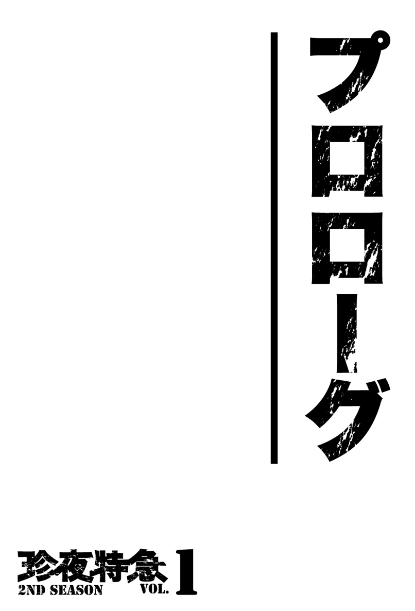
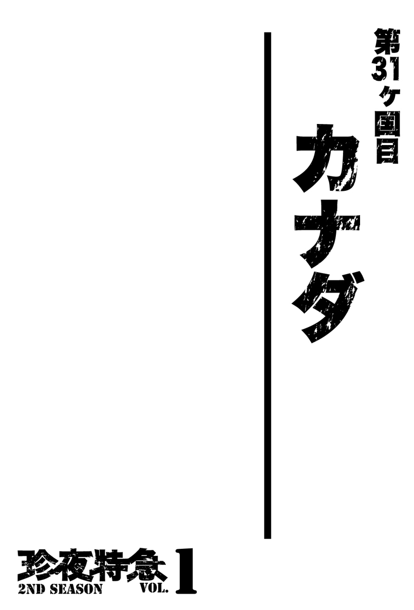
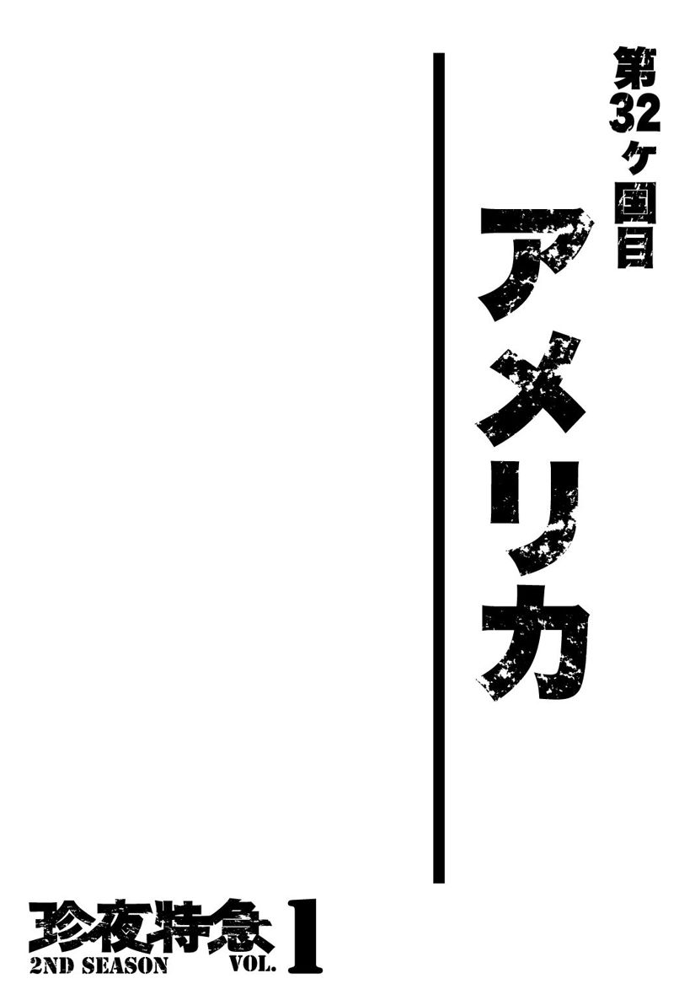

| 珍夜特急 2nd season 1―カナダ・アラスカ― | |
| クロサワ コウタロウ | |
| Kurosawa Lettering (2013) | |

※本書に記載されている料金は２００２年当時のものです。

１
２０００年１月２日、約１年にわたるユーラシア大陸単独バイク横断を果たした私は、ロッテルダムより発送した愛機ホンダＸＬ２５０Ｒパリダカよりも一足先に成田に到着した。
夜間の帰国だったにもかかわらず、空港には10人ほどの大学時代の仲間が迎えに来てくれており、１年ぶりに変わり果てた姿で現れた私を盛大に歓迎してくれた。
迎えの車に乗り込んだもののいまだ夢覚めやらぬ私は、まるでスクリーンを隔てて話しかけられているかのような錯覚にとらわれながら、仲間たちの散発的な質問に答えていた。車窓を流れる１年ぶりの東京の夜は懐かしいようで何処か遠い。
この時の私に不思議と達成感はなく、むしろこれからの生活についての懸念の方が頭の大部分を占めていた。
「でさ、これからどうする？ とりあえずお前の実家に向かうか？」
運転する溝口は大学時代の同期であり、また私の所属していたバイクサークルの部長でもあった。出国前、彼にバイクに関する知識を叩き込まれたのが随分昔のような気がする。
溝口は既に就職を決めていて、この春卒業と同時に地元である長野県に帰ることになるらしい。
――そうか。もし順調に大学生を続けていたら、私も今年で大学を卒業する年齢だったか。
まあたとえそうだったとしても文系の私の場合、溝口のように無事に就職先を確保できていたかどうかはかなり怪しい。
時代はちょうどバブルが崩壊し終わって一息ついたところだ。時間差で表面化し始めた不景気という得体の知れない闇は、確実に学生の就職活動にも影響を及ぼしていた。あとで聞いた話だが、文理違わず同期たちは軒並み就職浪人と化しており、むしろストレートで就職できた溝口は例外的な存在だったらしい。「フリーター」という言葉が乱用され始めたのもちょうどこの頃だったと思う。
「ああ。いやあ、今日は実家は......いいかな。弟には一応メールで帰国を知らせてあるし、親にはまた改めて報告に行くよ」
「それじゃあ決まりだな。学校に行くぜ。部室でみんなが待ってるからな。面白い話を聞かせてやれよ」
「ああ。そうだな......」
私はどういう訳か実家に顔を出すのが億劫になっていた。
別段両親と仲が悪い訳でもなかったが、19歳で家を出て自活するようになってから、実家というものが他人の家のような気がして落ち着かず、何処となく遠慮してしまう存在になっていた。
それに比べれば、出国直前まで一時的に住まわせてもらっていた大学の部室の方がよほどくつろげる。
「......で、コータロー。これからどうするつもりなんだ？ 大学には復学するのか？」
「復学はないな。とりあえず金がない。使い果たしてしまったからな。学費なんて払ってる場合じゃないし......これからどうするかも......まだ決めてないんだ」
「そうか......それじゃあこうしたらどうだ？ とりあえず今後が決まるまでまた部室に住むっていうのは？」
「......いいのか？」
「いいさ。お前の話を聞きたがっている奴もたくさんいるしな」
「悪いなミゾ。助かるよ。それじゃあ少しの間、お言葉に甘えさせてもらうよ」
「よーし、それじゃあさっさと八王子に戻るか。久しぶりに日本の酒でも堪能してくれよな」
溝口はそう言うと、夜の首都高を走るレガシーのアクセルを大袈裟に踏み込んだ。
こうして私はしばらくのねぐらを一先ず休学中の大学の部室に決めた。結局少しの間どころか、それから約半年間も住むことになろうとは、この時は思いも寄らなかったのだが。
帰国当日からほぼ連日連夜にわたって同期に先輩、後輩、そして部外者たちが、酒や肴と引き換えに私の冒険譚を聞きに部室を訪れた。
私も得意満面に、旅の中でもとりわけ彼らが興味を持ちそうな箇所を選んで話した。
溝口は３月に無事卒業して地元に帰り、その後はひとつ下の後輩が部長になっていたが、幸いにも新部長は私の部室への居住と連日の飲み会には寛容だったし、むしろ部員不足だったサークルのリクルーティングの機会としてそれを上手く利用していたようだった。
一方私の方はと言えば、多少残してきた資金もすぐに底をつき、それでもしばらくは部室を訪れる学生たちが地元から持ち帰ってきた米や野菜で飢えを凌いでいたが、さすがにそれも限界に達したため、新部長に頼んで現場仕事のバイトを紹介してもらうという体たらくだった。
私自身、可及的速やかに今後の身の振り方を決めねばならないのは重々承知していたのだが、連日の飲み会と肉体労働は私に悠長に考え事をさせる暇すら与えなかった。
実際部室での生活は快適だった。
冷暖房は完備だったし、部室のすぐ外には共同の便所と給湯室があり、別の棟に行けば夜中まで使えるシャワールームもあった。工学部棟には誰でも使えるパソコンがあり、それを使って旅で知り合った世界の友人たちとも連絡を取れた。
先行きの不安とプライベートが全く存在しないという点さえ無視すれば、海外のお湯すら出ない安宿や山の中で１年間暮らしてきた私にとって、この環境はストレスどころか幸せそのものだった。
こうして私は、朝５時に起きて部室から仕事場に向かい、帰ってきてからは朝方まで学生たちと酒を飲んだくれるという――全くその日暮らしな毎日を繰り返すようになった。
＊
話は少しさかのぼるが、帰国後ほどなくして、オランダのロッテルダムから発送した私の愛機パリダカが東京港に着いたという連絡を受けた。
実際日本に帰ってきてからというもの、パリダカがないために私は酷く不便な生活を強いられていた。都内ならいざしらず、こと八王子において自家用車がないというのは、それだけで行動範囲が著しく制限されるのを意味する。地方にお住まいの方なら、きっとこの感覚を理解していただけるのではなかろうか。
そんな訳もあって、私はパリダカの到着を首を長くして待っていたのだった。
東京港における荷物の受取会社は、ロッテルダムで発送を担当した会社WILLSONが指定した日新なるところで、この会社と荷揚げの詳細な日程などを取り決めた。
驚いたのはインドで愛機を受け取った時と異なり、バイクを木箱に入ったまま引き取らなくてはならないという点だった。
１年前に横浜の日通からインドへ愛機を発送した際には、一緒に送る荷物を積んだパリダカで倉庫に乗りつけ、そのままキーを渡して終了だったし、それはロッテルダムのWILLSONでも同様だった。
一方、カルカッタで１ヶ月ぶりに愛機と対面した時には既に木箱は解体されていたので、私はそのままパリダカを運転してホテルまで戻れた。
もっとも輸送の規則でガソリンを抜いていたため、走り出す前に現地で入手する必要はあったが、そのあたりは寛容なインドだったお陰でそこまで苦労した記憶がない。
こうした理由から、実のところ私はこの時までバイクが収納されている木箱の大きさを知らなかったのだ。寸法ベースで確認したところ、輸送には最低でも４ｔトラック以上が必要になると言う。
倉庫の片隅で木箱を解体するから、何とか中身の愛機だけを引き取れないかと私は担当者に頼んでみたが、敷地の狭い日本の倉庫ではそんな廃材を引き取る余裕はないと一蹴されてしまった。
トラックのあてはおろか自動車の運転免許すら持っていない私は、悩んだ末にまた溝口に相談した。
溝口はトラックの手配と運転を快く引き受けてくれた。
寒さ真っ盛りの１月末某日、私と溝口、そして積み降ろしを手伝ってくれる尾上の３人は、溝口が借りてきてくれた４ｔトラックに乗り込み、東京港に向かった。
尾上はかつて私が旅に出る前、生活費を抑えるために１年ほど３人暮らしをしていた時の仲間だ。彼もこの年で卒業だったが、バイトをしていた会社でそのまま契約社員として働くことが決まっていた。
多少道に迷ったものの、どうにか時刻通りに目的地に到着できた私たちは、簡単な書類の確認を済ませ、いよいよ愛機の入った木箱と対面することになった。トラックの腹を開けて待ち受ける私たちの前に、予想以上に馬鹿でかい木箱がフォークリフトで運ばれてくる。
でかい。果たしてトラックに収まるだろうか。
幸い木箱は何とかトラックに収まったが、その瞬間私たちに新たな心配事が発生した。
「ミゾ。これさ、降ろす時どうしようか？」
「そうだなあ......いや、本当にどうしよう......」
「まあ、ここで考えていてもしょうがないだろ。とりあえず学校に戻ろうぜ」
「確かに尾上の言う通りだな。ここにいてもしょうがない。とりあえず八王子に戻ろう。この車を返す時間もあるしな」
結局私たちはこの腹に収まった巨大な荷物をどうするか決定する前に、八王子の大学に着いてしまった。
しばらく知恵を出し合った３人は、トラックの後ろのハッチを開けると、野球部から借りてきた金属バットで頑丈な木箱を何度も殴打し、ようやく剥がれた１枚の板をスロープにして、何とか中身のパリダカを引き出すことに成功した。
約１ヶ月ぶりに対面したパリダカはフレームの間に横通しの棒をかまされ、箱の中で完全に直立した状態で収まっていた。そのため木箱から引き出すためにはさらに鋸を探してこなくてはならなかった。
ミュンヘンで購入したスチールのボックスは車体に装着されたままで、このボックスを取り外しておけばもうちょっと小さい箱で済んだのではないかという思いが頭を過ぎったが、再びバイクを何処かに発送する予定のない今となっては、ただ単にあとの祭りでしかない。
空になった木箱は３人で力を合わせてトラック内部から外に押し出した。溝口は迫り来るトラックの返却時間に間に合わせるため、私と尾上をその場に残し、慌てて構外へと走り出していった。
そう言えばこの時のトラックのレンタル代も、溝口が負担してくれたような気がする。気のせいだろうか。
日本への帰還を果たしたパリダカは思いのほか酷い状態だった。
タイヤは前後共にパンクしていたし、車体そのものに染み付いたカビ臭さはまだいいとしても肝心のエンジンがかからない。
そのため私は久しぶりに自身の運転で故郷を走るにあたり、バイクサークルの所有するガレージにて各部の点検と修理を行わなくてはならなかった。
エンジンオイルを交換し、エアクリーナーとキャブレターも一応掃除する。バッテリーを充電して何度かキックを続けると、ようやくエンジンは１ヶ月ぶりの雄叫びを上げた。
しかし思っていた以上にシリンダーヘッドからの異音がうるさい。オイルがにじんでいるのはもともとだったが、異音に関してはしばらく運転から遠ざかっていたために気づけたのかもしれない。
いずれにしてもエンジンの修理には金と時間と、さらには技術も必要になってくるので、一先ずはそのままにしておくことにした。
これからは未知の大地を何千キロも走る訳でもなし、とりあえず走行さえできれば日々の生活にそれほど支障はない。
旅で世話になったカルネもＪＡＦに返却した。
海外に自分のバイク（車も同様だが）を持ち出して旅するためには、車輌のパスポートとなるカルネが必要だ。カルネについての詳細な説明は割愛するが、これには１年間という期限が設けられており、それまでに持ち帰って発行元であるＪＡＦに返却しなくてはならなかった。
最初にカルネを使ってから１年後、私の通過した各国の税関たちが、持ち込まれた車輌が不足なく持ち出されたかどうかを確認して、晴れて一時輸入における関税の正式な免除が決定する。そのための書類がカルネなのである。
カルネは東京港でパリダカを受け取る際にも必要だったので、それが完了した今、こうしてようやく返却できるようになった訳だ。
以上をもって、私の旅を終了するための各業務は全て完了したことになる。
＊
帰国後３ヶ月ほどが過ぎたある日、新入生も入部してさらに賑わいを増した部室で、最近契約したばかりの私の携帯電話が着信を知らせた。
電話は大学の学生部からだった。
要約すると、既に休学の期限は過ぎているので、復学するか退学するかどちらかに決めてほしいという内容だった。
バイトをしているとは言え、そんな金は日々の生活と飲み代に消えてしまっている私にとって、実質選択肢はひとつしかなかった。
別に大卒というステータスに特別思い入れがあった訳でもないし、勉強についてはもとよりである。こんなこともあろうかと学費も自分で払っていたのだ。したがってどんな決断を下そうと誰に文句を言われる筋合いもない。
それでは退学の方向で――と告げると、職員はそれならそれで手続きが必要だと言う。
私はそれすらも面倒臭かったし、何よりも住所不定でしかもこっそりと部室に住んでいる身の上がバレるのも嫌だったので、何とかこの電話でおさらばできないかと問うた。
すると職員は、退学の手続きもしない場合には除籍という扱いになると説明してくれた。私の場合単位は２年次の分まで取っていたので、退学（中退）であれば後日再入学を志した場合、３年次からスタートできるようだったが、除籍の場合は入学した事実すらなかったことになるという。
簡単に言えば履歴書に大学中退と書けるか、高卒と書かねばならないかの違いだ。
今後の人生で、再び金と時間をかけて大学生をやるなどありそうもなかったし、大卒というステータスが必要な活動をする予定もなかった私は、特に何の未練もなくそのまま除籍扱いにしてもらうことにした。
こうして「大学生」という社会的立場すらも失ったお陰で、私に残されたのは学生たちからの幾ばくかの尊敬と、不法滞在者というレッテルだけになった。
大学を除籍になった私は、それをきっかけにようやく今後の身の振り方を真剣に考えるようになった。気づけばこの部室に住み始めてから半年近くが経過している。
もちろん長期的な展望にまで考えが及ぶはずもなかったが、それでも直近の金は必要だった。日々の現場バイトではなく、もうちょっとまとまった金がなければ住居を借りることすらままならない。正式に部外者になった以上、いつまでもこの部室に住み続ける訳にはいかなくなっていた。
私は一先ず住み込みを条件に仕事を探すことにした。できれば慣れ親しんだ飲食関連の仕事がいい。何よりも厨房なら飯にありつける。
アルバイト情報誌を開いてこれらの条件で検索してみると、そのほとんどが地方でのホテルの仕事だった。
――ホテルか。また旅に出るようなものだし、それはそれで悪くない。
こうしていくつかのホテルに電話をかけた結果、私は軽井沢の会員制ホテルでキッチンスタッフとして採用してもらえることになった。先方の支配人の話によれば、とりあえず秋口までは仕事があるらしい。
とにかく就職を決めた私は、軽井沢までの旅費を除いた残りの手持ちで、これまで世話になった仲間たちに焼肉をご馳走した。若者たちの胃袋は限度を知らず、現場仕事でコツコツと貯めた蓄えは綺麗さっぱり失われてしまった。
数日後、私は部室に置いてあった少ない荷物を整理すると、半年前まで毎日行っていたように全てを愛機パリダカに積み、世話になったバイクサークルの部員たちに一時の別れを告げた。
何処か懐かしくもあり、また慣れ親しんだ行為だった。
２
軽井沢での仕事は、これまでに私が経験したどの仕事よりもずっと気楽で、その気候と相まってゆったりと日々が過ぎた。
職場の仲間も、数人の社員を除いてほぼ全員が私のような出稼ぎ者か、あるいは地元のパートのおじちゃんおばちゃんだったこともあり、変な疎外感もなく、部室に住んでいた時のような安寧を感じるまでそう時間はかからなかった。
煙草と酒を買う以外にかかる生活費もなく、私の資金は予定通り着実に貯まりつつあった。
私の軽井沢における当初の目的は、とりあえず東京で住居を借りられる程度の資金を貯めることだったが、２ヶ月も経たないうちにそれももはや達成したも同然の状態となると、欲が出たのかこの地でもう少し先のことまで考えたいという思いが湧き上がってくる。
――そもそも東京に部屋を借りて、それから何をしたらいいのだろうか。
もちろん何らかの形で働かなければならなかったが、取り立ててやりたい仕事がある訳でもない。というよりも仕事にこだわりや使命感がなかったために、稼げるのであればどんな仕事でもよかったのだ。
世の中は不景気の真っ只中と言うが、選びさえしなければ仕事なんて腐るほどある。その点、いわゆる正規雇用を前提とした就職活動をしていない私は妙に気楽なところがあった。
――何か面白いことはないだろうか。
たとえそれが長期的に保証されたものでなかったにしろ、日々の生活が安定してくるといつの間にか、かつて私を苛ませた例の言葉が再び頭を過ぎるようになった。
――私は何のために２００万円も費やして旅に出たのだろうか。
言うまでもなく「この経験が○○のためになる」とか「スキルアップに繋がる」といった確固たる目的があった訳でもなかったし、もちろん就職の際に得意げに語る実績を作るためでもなかった。
何のことはない。ただ単純に面白そうだったから実行したに過ぎないのだ。
結果的に自分で決めた目標を達成できたことは自信にも繋がったし、この半年間でその思い出にも十分浸れた。まあ、この先10年くらいは飲み屋で語る四方山話にも事欠くまい。それだけで十分元は取れたと言ってもいいのではないだろうか。
――それならば次は一体何だ？
ユーラシアの旅以上に面白く、さらにこれからの人生を賭けられるような――そんな「何か」を見つけなくてはならない。
たとえ収入に繋がらなくてもいい。ただ何よりも優先して夢中になれ、それだけに没頭できるような――そんな強烈な「何か」が欲しい。
世の中にはもっと面白い「何か」があるはずだ。そうだ。人生の面白さがこんな程度の訳がない――。
冷涼な夏の軽井沢で、私は仕事の空き時間を見つけてはホテルの屋根に登り、そこでいつぞやのように日々同じことを繰り返し考えるようになっていた。
結局私は、昨年成し得た旅にかわる「面白いこと」にたどり着けなかった。
とは言え、いずれにしてもこれから生きていくためには何かしらの目標が絶対に必要だ。
当時の私は生きていくための理由を失うことを何よりも恐れていた。
私は悩んだ挙げ句、モチベーションとしては大分下がるが、暫定的にもう一度旅に出ることを決めた。
ユーラシアの旅の最中にも自ら口走っていた「南北アメリカ大陸縦断の旅」である。
――少なくても前の旅は、これまでに経験したどんなことよりも「面白かった」ではないか。
つまり旅こそがこの段階の私の中でもっとも「面白いこと」であり、代案がない以上、それは今後もしばらくその地位に君臨することになる訳で、それならばもう一度それを目標にして日々を活動した方が、少なくても怠惰に時間を浪費するよりはずっとマシだという結論に達したのである。
新しい旅の準備中にもしもっと「面白そうなこと」を見つけたら、予定を変更すればいいだけの話だ。特に資金は何をするにしても役立ちこそすれ邪魔にはならない。
酷く消極的な決断だったが、何よりも私にとっては心に期すものもなく漫然と日々を過ごすことこそが悪であり、もっとも唾棄すべき行為だった。
「若者に必要なのは安息ではない。冒険だ」
何処かで聞いたこんな言葉を信じ、いつまでが若者なのかもよくわからないまま、私はただ猛進するための理由を探していた。
＊
経緯はどうであれ、とにかくこうして次の目的は決まった。
となれば既に一度通った道であり、やるべきことは自然と整理されて私の眼前に並ぶ。
私はまずこの軽井沢にいる間に大型自動二輪の免許を取得することにした。
前回の旅でもっとも苦戦を強いられたのは、寒さや暑さではなく風だった。
２５０ｃｃのパリダカでは、女ひとり分にも及ぶ荷物を積載して走行するには極めてパワー不足で、広大な大地に吹き降ろす風のせいで何度車線から逸脱させられたかわからない。
ましてや今度はロッキーやアンデスを有するアメリカ大陸である。その自然の過酷さは容易に想像できた。
ノッチのＤＲも６５０ｃｃだったし、むしろ４００ｃｃ以下のバイクで旅をするライダーなど私の出会った中では皆無だった。否、ブダペストで一瞬すれ違った日本人ライダーのカップルはスズキの２５０ｃｃだったか。
また愛機を大型にかえることで、積載できる荷物が飛躍的に増やせるのも魅力だった。
１年にわたって散々野営を行ったお陰で、私は現在の装備に欠けているものやグレードアップが必要なものを熟知していたし、ドイツで購入したスチールのボックスを搭載するならそもそもの基本重量が増すことになり、愛機自体のスペックアップは避けられない状況だった。
次の旅先をアメリカ大陸に決めた以上、私が大型免許を取得するのはむしろ必然だったのである。
大型免許の取得に踏み切ると同時に、私は新しい相棒となるバイクも探し始めた。そんな中、古いバイク雑誌の中に見つけた１台のビッグオフに着目する。
車名はＸＬ６００Ｒファラオ。年式も85年とパリダカより２年あとのモデルとなる。
私がバイクを探すにあたり設定した条件は、前回のパリダカ同様とにかくビッグタンクを装備したオフロードタイプである点だったが、このファラオは６００ｃｃという私の求めていた排気量だったのに加えて、何と28リットルのタンクを標準装備していたのである。
21リットルのタンクを装備する２５０ｃｃのパリダカが、フルタンクで６５０キロ以上走れたのに鑑みれば、増えた排気量の分を加味しても少なくても同等の距離は走れるはずだ。
それにファラオはセルスターターとキックスターターを両方装備していた。これなら万が一セルが壊れたとしてもエンジンを始動できる。
エンジンタイプはパリダカとは全く異なるものの単気筒空冷は同じ。マルチタイプに比べて構造もシンプルなため、有事の際の整備性についても申し分ない。
私は次の旅のパートナーとして、ＸＬ６００Ｒファラオの採用を即座に決定した。
しかしこのファラオには、パリダカにはない難点がひとつだけあった。
それは入手がほとんど不可能に近いという如何ともし難い問題である。
85年に国内で僅か３００台しか生産されていないファラオは、言わばＸＬ６００Ｒの限定的な亜種であり、しかも発売から既に15年も経ったこの時点においては、どれほどの台数が生き残っているのかさえわからなかった。もちろん言うまでもなく入手の可能性があるのは中古車のみに限られる。
教習所に通う道すがら、見かけるバイク屋でこのファラオの存在について散々聞き込みをしてみたものの、その存在を知っている者すらほとんどなく、実物を見たことのあるメカニックは皆無だった。
インターネットで検索をかけてみても数少ないヒットしかなく、そのほとんどが現在でもかのバイクを可愛がっているオーナーのブログだった。
このようにどれだけ探してもファラオは見つからない。
そのせいかファラオは値段に関しても「０円の可能性もあるし１００万円の可能性もある」と言われていて、つまり欲している人間とそうでない人間の間にかけ離れた価値の差を生み出していたのだった。
ファラオが手に入らなかった場合の候補としては、一応ホンダのアフリカツインを考えていたが、大きすぎる車体とファラオに比べて小さいタンク、また二気筒という若干複雑なエンジン構造が私の中で引っかかっていた。７５０ｃｃという排気量も私には少し大きすぎるような気がしないでもない。
教習所での講習は順調に進んでいたものの、肝心な愛機の入手に関しては一向にはかどらず、私の不安は日に日に増大していった。そもそも私はファラオに乗るために大型二輪の免許を取得しようとしているのである。
そんなある日、先に訪ねた小諸のレッドバロンから１本の電話が入った。
何と宮城県古川の店舗で１台のファラオが見つかったという。走行距離はまだ２万キロほどで、納屋に放置されていた美品らしい。値段は車検費用も込みで40万円弱だった。
私はできれば自身で現地に赴き状態の詳細を確認したかったが、軽井沢での仕事はちょうど繁忙期を迎え、教習所に通う時間すら捻出するのが困難になっていた。
そこで私は大学時代の先輩に、お盆に実家の仙台に帰省する際、何とか古川まで足を伸ばしてファラオの状態を確認してくれないかとお願いした。この先輩はその後ヤマハに就職するほどの単車好きで、かつ知識も豊富だったため、むしろ私が確認しに行くよりも安心できると思ったのだ。
先輩から「確かに美品、購入に問題なし」という報せを受けた私は、小諸のレッドバロンに相談してファラオを古川から取り寄せてもらい、車検とナンバーの取得を頼んだ。この時私は軽井沢に住民票を移していたため、ファラオのナンバーは長野ナンバーとなる。
奇しくも納車の予定日は、教習所での卒業試験のちょうど翌日となっていた。
この頃私は、通っていた佐久の自動車学校で運転能力の飛躍的な向上を遂げていた。
当時はちょうど大型自動二輪免許が教習所で取得できるようになったばかりで、私は難関とされる一発試験を避けて教習所での取得を選択した訳だが、そこが非公認――つまり卒業と同時に免許がもらえるのではなく、卒業すると一発試験を受けるための優先権が与えられるという単なる練習所だったことは、入学後しばらくしてから知った。
非公認とは言え――否、それ故か、かの自動車学校での訓練内容は過酷なものだった。
片手立ち乗りでのスラロームやフルロックターン、倒したパイロンにタッチできるまでバンクさせるコーナリングの練習など、７５０ｃｃのバイクをまるで原付きのように乗りこなせるようになるまで段階表には捺印してもらえない。
私の運転技術に関するプライドはことごとく打ち砕かれ、度重なる転倒のあとに女性教官に罵倒されるという苦渋に満ちた日々を過ごさなくてはならなかった。お陰で教習後は下半身が完全に麻痺してしまい、若干仕事に支障をきたしてしまったほどである。
実はこの時の訓練が後に大きく役立つのだが、この時は当然そんなことなど知る由もなく、私はあの鬼のような教官たちをただただ恨んだ。
結果として格段に運転能力を向上させた私は、卒業後の一発試験も文字通り一発でクリアできたのだった。
はやる気持ちを抑えながらファラオを受け取りに行った私は、そこで初めて中古車とは思えないほど綺麗に整備された新しいパートナーに対面した。
またがってみると確かにパリダカよりも大分重かったが、低速のトルクはやはり大型のもので、これなら大量の荷物を載せても何ら支障はなさそうだった。
車体もひと回り大きくなったため、取り回しや足着きに若干の不安はあったが、それも乗っているうちに慣れるだろう。
私はファラオを仕事場兼住居のホテルに持ち帰ると、仕事の合間を見つけては旅仕様への変更に勤しんだ。
ヘッドライトカウルを外してそこに鉄製のキャリアを設置し、パリダカに取り付けてあったスチールボックス用のフレームも加工して装着。ステアリングバーは高めの社外品に交換した。こうすることで長距離を走っても疲労の少ないライディングポジションをとれる。
両レバーは短くカットして転倒の際の破損に備える。予備のワイヤー類はそのまま現状のものと一緒にワイヤリングし、切れてしまった時も即座に交換できるようにした。
またエンジン前にステーを設置してそこに工具一式を括り、タイヤ用のエアポンプは別途シート下のボックスに収納できるようにする。
ちなみにこのエンジン前に工具を積載するというアイデアは、前回の旅の最中外国人ライダーのバイクによく見かけたもので、ラリーライダーがよくやる手法らしい。
実際工具はもっとも重量のある荷物なので、サイドボックスに入れてしまうとスペースをとる上にバランスが悪い。こうして下部に設置することで、収納スペースの確保はもとよりマスの集中化ができる。
パットやシュー、ヘッドライトバルブなどの消耗品、その他長期間走り続けるために必要になるスペアパーツも、近所のバイク屋に相談しながら徐々に集めていく。
パーツの選定に関しても、全くの無知で溝口を頼るしかなかった前回とは異なり、海外での入手経験も踏まえることができたため、必要最小限に抑えられたと言える。
＊
お盆を過ぎると、軽井沢の町からは徐々に客足が遠退き出す。
避暑地である軽井沢は、夏の間でも気温が30度を超えることはほとんどない。かわりに冬は路面を含め、全てを凍結させてしまうほどの極寒となる。そのため秋口から冬にかけて、町はあたかも冬眠に入るように賑わいを失っていくのである。
当然ながら勤務するホテルでも目に見えて客の予約数が減り始め、私はそろそろ別の働き口を探さなければならなくなっていた。
私は支配人と料理長に頼んで、長野が積雪で覆われてしまう前に別のホテルに働きに出ることを了承してもらった。
それまでにも特に料理長には非常によくしてもらい、私は仕事がない日でもパートの賄いを作ることを条件に、部屋と食事を保障してもらっていた。
また結果的に乗れなくなってしまったパリダカに関しても、翌年のＧＷには取りに帰ってくることを約束して、その間は敷地内に置かせてもらう許可を得た。
ほどなくして長野市松代で似たような仕事を見つけた私は、再び家財道具を新たな愛機ファラオに積み、世話になった軽井沢のホテルをあとにした。
それから私は松代、駒ヶ根、軽井沢といった長野県のホテルを半年ごとに渡り歩く生活を続けるのだが、とにかく生活費を全く使わなくていいこの生活スタイルのお陰で、２年の間に再び２５０万円ほどの資金を蓄えられた。
この出稼ぎの旅も、恋を含めてそれはもう様々な出来事があったのだが、これについては本編のテーマから若干外れるため、甚だ遺憾ながらここでは割愛する。
３
出稼ぎの旅を続けながら、それでも私が休みの度に大学の部室に帰省していたのは、仲間たちとの交流のほかにもうひとつ理由があった。
それはパソコンでのメールチェックである。
大学に誰でも使えるパソコンがあったことは前述したが、当時まだパソコンはそれなりに高価なもので、あまつさえ愛機に積める量の荷物しか所有できない私にとって、それは必要な時に借りるものだった。
世話になった外国の友人への報告や、エルビスなどまだ旅を続けている連中とのやり取りにメールは欠かせなかったが、当時の携帯電話ではフリーメールを受信できなかったと記憶している。
そこでまとまった休みが取れる度に八王子に戻り、大学のパソコンでメールを確認することは、私にとって数少ない楽しみのひとつになっていたのだった。
長野が雪で覆われる前に一度大学に戻った私は、このパソコンチェックでノッチからのメールを確認した。
ノッチことアントヌッチ・ヨルゲンは、前回の旅における１ヶ国目となったインドで知り合い、パキスタンで再会したあとはトルコまでおよそ３ヶ月にわたって共に走った――イタリア国籍を持つ４つ年上のドイツ人ライダーである。
ノッチの愛機は、彼女だったシルビア・コハルスキーと２人分の荷物を積むために大々的な改造の施されたスズキのＤＲ６５０で、海外ライダーにとって必要なことは全て彼から学んだと言っても過言ではない。
ノッチは私よりも半年ほど前に旅を終了しており、その後はドイツ南部のアウディの街インゴルシュタットでシルビアと一緒に暮らしていた。
私よりも１年以上早く社会復帰を果たしていた彼からのメールは、彼が既に次の目標としてアメリカ大陸の旅を決定していること、それに向けて資金も含めた準備を現在着々と進めている――という内容だった。
私も現状報告に加えて、暫定的とは言え次の目標をアメリカ大陸にしていることを伝えると、日を置かずしてノッチから返信が来た。
「コータロー。もしお前もアメリカに行くのなら、現地で合流してまた一緒に走ろう」
このような反応が返ってくることは当然予想していたが、それでも抑えきれない喜びが私の中で込み上げてくる。
――またノッチと旅ができる。
それまではあくまで暫定的としていたアメリカ大陸の旅は、この時から急速に色彩を帯び始め、私にとってまごうかたなき次の目標と相成った。
私は長野に戻ったあとも図書館などのインターネットができる施設を探し、これまで以上に密にノッチと連絡を取るようにした。また溝口や、旅から帰ってきたエルビスが長野在住だったお陰で、彼らの家を訪問するがてらメールのチェックをさせてもらったりもした。
お互いの準備期間がちょうど２年間だった点も幸いして、私たちの計画は最初から足並みを揃えていたと言っていい。
私の出稼ぎの旅も２年目を迎え、南北アメリカ大陸の地図を入手する頃にはもう合流地点を打ち合わせるまでになっており、ノッチと私は最初の国をカナダに決めた。
愛機を持ち込むにあたり、太平洋を渡るために船便を使わなくてはならない私のゲートは西海岸のバンクーバー。一方で大西洋を空輸によって渡るノッチのゲートは東海岸のトロントとなる。
私たちの合流地点は、海輸のために時間のかかる私のルートを考慮した結果、カナダの中心から少し西側に位置するクライドという町に決定した。
期間は前回と同様に約１年。今回の旅の目的は南北アメリカ大陸の最北端から最南端までを走破することに決めた。
出発は５月。東西を走り抜けた前回の旅とは異なり、今回の旅は南北を縦断する。つまり旅の途中で赤道を越えることになり、この時期に出発すれば１年中夏のままでいられる計算だった。逆にこの時期を外せば、道中かなり調整を行わないと南北どちらの極地にも到達できなくなる。
最後まで一緒に走るかどうかについては、ノッチも私もこの時はまだ決めていなかった。
確認しないまでも、お互いの資金や自国での社会生活における縛りは存在するはずだったし、何よりも道中何が起こるかはそれこそ未知だったからだ。
ノッチと私の中で一致していたのは、今回の旅が前回よりもずっと危険度が高いという認識だった。
もっとも気をつけなくてはならないのが中南米における治安の悪さと動植物で、特に後者に関しては、野宿を旅の基本スタイルとする私たちにとって生死に関わる問題だった。
北米で予想される熊はまだしも、中南米に生息する肉食系の野生動物、あるいは毒蛇や毒虫の類いは、比較的自然の優しい日本で育った私にとって完全に心配事の筆頭となった。
八王子に帰る度に生物学科の学生を捕まえて、本気でこの地域の害獣、害虫対策について教えを乞うたが、私の憂慮を理解できない彼らは面倒臭そうに、
「赤とか黄色とか色の派手な奴は、とりあえず触んない方がいいんじゃないすかね」
といった程度のアドバイスしかくれなかった。
本やネットで入手できる断片的な情報は不安を煽りこそすれ、その決定的な対処法を教えてくれるには至らず、私はこの頃から、ホテルの自室で放映しているディスカバリーチャンネルすらも観なくなってしまった。
そんな心配をよそに時は過ぎ、前回はあれほど苦労した愛機の持ち出し手続きも、今回は効率的かつ事務的にこなされた。カルネも申請して海外ナンバーも陸運局で取得。期限切れになってしまっていた国際免許も新たに作り直した。
トロントまでバイクを空輸するというノッチに比べて、今回も海輸を使う私は１ヶ月ほど早く愛機を発送しなくてはならなかったが、その時期に予定していた２００２年４月ももう目の前に迫っていた。
この頃ノッチから思わぬメールが届いた。
「コータロー。今回の旅に連れていく予定だった新しい彼女が途中参加になった。彼女の仕事の都合がどうしてもつかなかったんだ。そのかわりって訳でもないが、もうひとりドイツから友人を連れていくことになった。お前もよく知っている奴だ。まあ誰かというのは会ってからのお楽しみだな」
ノッチは前回の旅の伴侶だったシルビアとはもう別れていて、この時の彼には既に新しい彼女がいた。私よりもひとつ年下だったシルビアとはうってかわって、今度はノッチよりも少し年上の彼女だという。
私も会ったことのない女性らしいが、前回の旅ではパーティーにシルビアという異性がいてくれたお陰で色々と助かった部分もあり、これは少し残念な報告だったと言える。
それにしてももうひとりの男とは一体誰なのだろうか。
こちらに関しては「私もよく知っている奴」らしいが、下手をすれば１年間寝食を共にする大事な仲間だ。気の合う男であればいいのだが――。
私は何故かこの時、若干の不安を感じずにはいられなかった。
＊
前回の旅において私がもっとも後悔していたのは、横浜港からカルカッタに愛機を海輸する際、25万円もの費用をかけた点だった。
これは何の情報もないまま、バイクの海外発送を担ってくれる会社を独自に探して大手の日通にたどり着いた結果だったが、当時は請け負ってくれる輸送会社があるだけでも幸いで、その料金を精査するまでの選択肢がなかった。
しかしロッテルダムからの返送にかかった費用がその３分の１だったこともあり、もっとよく探せばそれと同等とまではいかないまでも、より安く発送してくれる会社があるかもしれないと考えていた。
そして思いも寄らない偶然から、私はその情報を入手することになる。
私はインターネットを活用するようになって、それまでは決してたどり着けなかった類いの情報を、容易にかつ迅速に入手できるようになっていた。
ネットを使った情報収集は旅の情報のみならず、新しい愛機ファラオのパーツを入手するためにも活用されていた。
前述したように、85年に３００台しか国内生産されなかったファラオは、稀少なために入手できるパーツもかなり限られていた。
絶版のために正規ルートで入手できるパーツには欠品が多く、社外品は汎用のものしかない。そこで私はオーナーが廃車にしたファラオのパーツを販売しているサイトを見つけ、とにかくできる限りの部品を安価に譲ってくれるようメールで交渉していたのだった。
メールを送りつけたファラオオーナーの中でも世田谷に住む男性が、引き取りに来ることを条件に前後のホイールを無料で提供すると申し出てくれた。
ちなみにファラオのホイールは、チューブ、チューブレスの両方を装着できるようになっており、私のような長距離海外ライダーにはもってこいの仕様だった。
後輩の運転する車で世田谷の閑静な住宅街に向かった私は、引き取りの際、彼もかつては海外ライダーだったことを知らされる。
「へえ、そうだったんですね」
「ええ。私の場合は仕事を引退してからだったんで、あなたのように野宿生活で乗り切る体力はなかったですがね。期間は半年ほどでしたがファラオは大きな故障もなかったですよ」
「そうですか。安心しました。私もファラオは入手してまだ日が浅いもので......」
「ところで輸送はいつもどうされているんですか？」
「え、ああ。それをちょうど悩んでいるところです。前回はカルカッタまで日通を使ったんですが、かなり高くて。もっと安く請け負ってくれる会社を今探しているところなんですよ」
「そうでしたか。それなら私の経験で恐縮ですが、千葉のタービュランスという店を訪ねてごらんなさい。私は知り合いの紹介でその店を知って利用したんですが、かなり安く発送してくれましたよ」
「タービュランス......ですか？」
「ええ。もともと海外ラリーなんかに参加している店のようで、その辺の知識は豊富みたいです。何でも梱包にコツがあるらしくて、それによってぐっと費用を抑えられるそうですよ」
「梱包ですか......。ありがとうございます！ わかりました、ちょっと調べてみます」
「あなたの旅が無事なよう祈っていますよ。もし道中何かありましたら、また連絡してください。お力になれることがあるかもしれません」
「ありがとうございます」
私は大学に戻ると早速タービュランスという店を調べた。
確かにタービュランスは千葉に存在し、メインの事業はバイクの修理やラリー車の製作となっていたが、小規模ながらも個人のバイクを海外に発送する代行も請け負っていた。
私は早速この店に電話し、社長である石井さんに詳細な話を聞いた。
石井さんの話によれば、ファラオであれば装備一式を含めてもバンクーバーまで11～12万円ほどで発送できると言う。もちろん引き取りの作業は全て私自身で行わなくてはならず、荷揚げの手数料として別途１～２万円ほどがかかるという話だったが、それにしても安い。
現地での手数料を含めても前回かかった費用の半額だ。あの時は英語力にも自信がなく、荷揚げの手続きを代行してもらうための費用も支払っていたが、実際カルカッタでその会社がしてくれたことと言えば、散々待たせた挙げ句に書類の案内をした程度で、これなら自分ひとりでも十分できると臍を噛んだのである。
石井さんの話によれば、タービュランスがこの価格で発送を請け負える理由は、やはり特殊な梱包の仕方にあるらしい。
これまでに私の経験したバイクの輸送では、まず木箱を製作してからその中にバイクを格納していた。つまり先日解体したあの巨大な木箱もろとも私の荷物になるのである。当然体積が増すので運賃は上がり、また木箱を製作するための費用もかかった。
しかしタービュランスでは木箱を製作せず、パレットなるものを使って梱包するという。これは現場作業員が使う足場の鉄パイプを使ってバイクを挟み、ベルトで固定して周りをラップでくるむという――非常に簡素な梱包方法だった。
この方法だと荷物の体積を最小限に抑えられ、またパレットはスパナ１本で解体できる。中身を取り出すためにもう４ｔトラックは必要ないのだ。
私は早速石井さんに発送をお願いすることにして、持ち込みの日取りを打ち合わせた。
４
既に暦は２００２年の４月に入った。
当時私が働いていた長野県駒ヶ根は、冬の間近年稀に見る大雪に見舞われたせいで、特にホテル周辺の路面にはしぶとく積雪が残り、ようやくファラオを運転できるようになったのは、まさに退社の１週間ほど前というタイミングだった。
この駒ヶ根のホテルを最後にきっちりと設定した資金を貯め終わり、私の出稼ぎの旅は幕を下ろした。
半年間世話になったレストランの仲間たちに別れを告げると、私はいよいよ来月に迫った出発に向けて心を躍らせながら八王子に戻る。これから出発までの約１ヶ月間は、再び学校の部室をねぐらにする予定になっていた。
八王子に帰った私は、早速申請しておいたカルネを取りに茗荷谷のＪＡＦに向かった。
前回の旅で私を指導してくれたキタノ女史は既に担当から外れていたが、新人と思しき中年の男性を指導するために、彼女はまだ同じオフィスで仕事をしていた。
「こんにちは。カルネを申請したクロサワですが」
「あ、ああ、クロサワさん、こんにちは。できてますよ、カルネ。――キタノさん。これを渡せばいいんですよね――」
中年の担当者はキタノさんの顔色を窺いながら恐る恐る私にカルネをくれた。まあ個人へのカルネ発行などそれほど頻繁にある業務でもなさそうだし、なかなか覚えにくいのは理解できる。
キタノさんは中年担当者に二、三の事務処理を指示すると私に声をかけた。
「クロサワさん、今ちょっとお時間大丈夫かしら」
「ええ。大丈夫ですが......」
「実はね。ちょうどあなたと同じ時期に海外にバイクで旅に出る人がいて、その人は今回初めてだから、あなたの話を聞きたいっていうのよ。下であなたのバイクを見たらしくて。――ほら、あそこの人」
そう言うと彼女は、奥の席に座っているひとりのライダーを指差した。そこにはライダースジャケットを着たやけに肌の浅黒い男が座っていた。
その後特に予定もなかった私はこの男のもとに挨拶に向かった。年頃は30代の中盤あたりだろうか。
「クロサワです。よろしく」
「いやあ、クロサワさん。下にあったの、あれあなたのバイクでしょ？ ファラオ。私も欲しかったんですよ。でも手に入らなくてね......だから私は結局ヤマハのテネレになりました」
「テネレですか......それだとちょっと燃料に不安があるかもしれませんね」
「そうなんですよ。キタノさんからあなたは経験者だって聞いたもので、その辺も含めてちょっとお話を聞きたくて。私、マホエっていいます」
「ええ、構いませんよ」
マホエさんは日系３世のブラジル人だった。来日して７年目になるという彼は自ら事業を行っていたが、様々な事情から会社をたたむことになり、それをきっかけに母国ブラジルまでバイクで帰る旅を企画したらしい。
彼の企画では最初にタイに入国。そこからバイクで走り始めてアフリカまで到達したあと、船で大西洋を渡りホームタウンであるサンパウロを目指す――というルートになっていた。
私と違い彼の場合は日系人のコミュニティ新聞がスポンサーになっており、同紙では彼のこの壮大な帰郷を連載として取り上げる予定らしい。
「マホエさん。タイからのエントリーだとインドに入るためにミャンマーを通過しなくてはならないですよね？ ミャンマーって通過できるようになったんですか？」
「いやあ、ちょっと厳しいって話は私も聞いてはいるんですがね。もしかしたら入れるかもしれないと思って。とりあえず行ってみることにしたんです」
「......そ、そうですか」
ほかの点についてもマホエさんは驚くほどに楽観的で、私が初めて企画した時と比べても計画の杜撰さは目立っていた。これがラテン人の気質という奴なのだろうか。
それでも私はマホエさんの底抜けな明るさが気に入り、時間がある時にでも私のねぐらである大学に遊びに来るよう誘った。
マホエさんは必ず訪れることを約束し、笑顔でＪＡＦを去っていった。
後日、実際にマホエさんは部室に手土産を持って現れた。
彼の来訪はバイクサークルの学生たちも楽しみにしていて、私たちは未知の大陸から訪れた同胞の話を肴に、いつもとは少し違う酒を飲んだ。
彼の話は日本で何不自由なく暮らす私たちにとって非常に興味深く、またサンバと美女くらいしか思いつかないブラジルという国を理解するのに、見事ひと役買ってくれたと思う。
マホエさんはもともとサンパウロの警察官だった。
日本とは比べものにならないくらい犯罪発生率が高いかの国では、警察官は非番であっても警察手帳を見せれば、公共交通機関を無料で利用できるらしい。
もちろんそれは警察官が優遇されているという訳ではなく、有事の際に活躍してもらうための措置だ。
ある非番の日、マホエさんもこのルールに則って市バスに乗り込んだ。
そしてその時、運悪くバスジャック犯が同時に乗り込み、何とマホエさんを含む乗客は人質になってしまったのだ。
一先ず乗客ひとりひとりから金目のものを奪い始める犯人たちに対し、本来何らかの行動を起こさなくてはならないマホエさんだったが、残念ながら彼は恐怖のためにヘタれ、自ら率先して財布の在り処を教えることで身の安全を確保したらしい。
結局犯人はしばらくしてから突入してきた警察隊に取り押さえられ、乗客は全員事なきを得たらしいが、最後にバスから降りたマホエさんは、駆けつけた警官隊が自分の職場の同僚たちだったためにまんまと素性がバレ、またそれが地元の新聞に載ってしまったお陰で辞職せざるを得なくなったらしい。
「――だってやっぱり怖いもん」
マホエさんは自ら率先して笑いながら当時を振り返った。私を含め学生たちも若干引いている。
「......マホエさん。ブラジルってそんなことが日常茶飯事なんですか？」
「え？ ああ。結構あるよ。だから日本に来たら安心しちゃって。いいよね日本」
「そ、そうですね......。何かこう......ブラジルのいいところの......その......話をしてくれないですか？ 一応俺、これから行く予定なんで......」
「ええ？ ああ、そうだねえ。そうそう、ブラジルでは日本人がモテるんだよ」
「本当ですか？」
「うん。ほら、向こうって私みたいな日系人が多いでしょ？ でも彼らは日本って国に憧れていて、日本から来た日本人が大好きなんだ。だからパブとか行って気になる女の子を見つけたら『私はオリジナルの日本人です』って言った方がいいよ。そしたら女の子の目の色が変わるから」
「ええ！ それはめちゃくちゃタメになる話じゃないですか！」
「ただね、その時はちょっと周りに気をつけてね」
「え？」
「いやほら、ブラジル人の男ってホントやきもち焼きが多いからさ。もし声をかけた女の子の彼氏が近くにいた場合、撃たれちゃったりするんだ。いやホント」
「......」
私は一先ずブラジルのパブでナンパすることだけはやめておこうと決意した。
マホエさんのこの楽観的かつ大雑把な思考は、前述したように旅の計画にも如実に表れていた。
企画したルートはもちろんだったが、さらにここで明らかになったのは、出発はもう目前に迫っているにもかかわらず、彼の購入したヤマハのテネレがまだ納車されていないという事実だった。つまり彼はテスト走行すらしていないのだ。
「え？ マホエさん、それって心配じゃないですか？」
「何で？ 新車で買ったもん。日本のクオリティだったら大丈夫でしょ？」
「え、まあ、そうですけど......でもほら、旅用にちょっと改造したりとか......」
「あ、そうだね。その辺は......うん、どうしよっかな。道中でやってもいいかもね。どの道納車されても私、日本じゃテネレに乗れないし」
「ええ？」
「うん。私、大型二輪の免許を持っていないんだ。ほらテネレって６００ｃｃじゃない？」
「マ、マジですか......」
遅くまで飲んだあと、マホエさんは私のメールアドレスを控えると上機嫌で帰っていった。
私は若干というか、かなりマホエさんの旅路に不安を覚えたが、私とはかけ離れた彼の楽観思考に少しだけ憧れもした。
実際マホエさんとは旅の途中もメールでやり取りすることになるが、彼は母国語であるポルトガル語をベースに、スペイン語などラテン系の言葉には堪能だったものの、英語に関しては全く駄目で、やり取りの文章もローマ字を使った日本語だった。
言葉の話で思い出したが、前回と違って今回私は語学の勉強を一切しなかった。
それは１年間にわたる前回の旅でかなり英語が上達したから――ではなく、特に私の使用用途の場合、日本でちまちま勉強するよりも現地で地元の人間を相手にした方がよほど効率よく覚えられるという――そんな経験に基づいた判断だった。
さらに言ってしまえば、今回の旅で使う言葉は２つしかない。英語とスペイン語だ。
それもメキシコ以南はブラジルを除き、全てスペイン語圏という至極メリハリの利いた分布になっていたため、最初の半年間は英語圏、残りの半年はスペイン語圏ときっちり分けられる。
半年もいれば、まあ普通に生活するために必要な会話力くらいは努力しなくても身につくだろう。
ブラジルのポルトガル語もスペイン語とかなり似通った言葉らしいので、その点に関しても特に不安はなかった。
５
こうして全ての準備が完了しつつある中、私はガレージで愛機ファラオの最終調整を行う日々を送っていた。キャブレターのチェックやタイヤの交換等である。
調整を終えた私はある晴れた日の午後、テスト走行を行うために国道に出た。気分よく八王子の町を適当に一周して帰ってくるつもりだったのだが、それがまさかとんでもない事態になるとは予想だにしていなかった。
ガレージから走り出た私とファラオは、ものの30分も走らないうちに道路に横たわることとなるのである。
それはまさに後方確認をせずに飛び出してきたハイヤーを避けて、中央分離帯に滑り込んだ結果だった。
発送を目前に控え、さらに調整も完了していたファラオは、保安部品が飛び散り、タンクまで凹んでしまうといった有様で、私はハイヤーの運転手に対して怒りをぶつけるよりも、果たして修理が発送に間に合うのかどうかという点だけを心配した。
幸いファラオの修理はパーツの交換が主だったために１週間ほどで終了し、何とか発送のためのタービュランスへの持ち込みには間に合いそうだった。一番の懸念事項だった車体の歪みもなかったようだ。
幸運だったのはほぼ諦めていたタンクの在庫があったこと。もちろんそれなりの値段だったが、これも当然ハイヤー会社に請求させてもらうことにした。
持ち込んだのが話のわかるバイク屋だったため、示談交渉用の高めの見積もりを作成してもらえたのも僥倖だった。そのお陰で若干値下げ交渉をされたものの、結果的には自己負担せずに済んだのである。
こうして発送直前の転倒というトラブルが一段落すると同時に、いよいよタービュランスとの約束の日がやってきたのだった。
＊
搬入の当日、私は発送する荷物を全て積み込んだファラオを駆り、タービュランスのある千葉に向かった。バイクを梱包してしまえばファラオでは帰ってこれないため、同期の友人が自家用車で付き添ってくれることになった。彼の１１７クーペには梱包の様子をビデオカメラで撮影したいという尾上も同乗する。
尾上はどうやら私の再出発に際して、その一部始終をドキュメンタリーとして残そうと画策していたらしく、走行中もしきりにカメラを回していた。
ところが道中１１７クーペがオーバーヒートを起こすという事態が発生したため、その修理に大幅に時間がかかってしまい、私たちは約束の時間をかなり過ぎてタービュランスに到着した。
立腹している石井さんに頭を下げたあと、気を取り直してタービュランスでの梱包が始まる。
ここで初めて国際ナンバーを取り付けられたファラオは、そのままガレージ内に持ち込まれ、足場の鉄材で左右両側から挟まれる。ちなみにガソリンは既に抜いてある。
直立状態になったファラオはそのまま数本のベルトでしっかりと固定された。底面となるパレットの四隅には、ちょうどファラオの高さに合わせた鉄棒が垂直に立てられて、これもボルトで固定。この四隅の鉄棒を周回するようにして何重にもラップが巻かれる。ファラオのステアリングとミラーはボルトを緩めて下げ、できるだけ低くされた。なるほど。こうやって荷物を四角形にするのか。
本来であれば前輪を外すことでさらなる体積の縮小が望めるという話だったが、そうなるとカナダで受け取ったあとの組み立て作業がひとりではやりづらくなるので、今回はそこまでお願いしなかった。
前後輪の横などの空いたスペースにボックスやテント、ヘルメットといったファラオと一緒に発送する荷物を固定した。
石井さんは作業をしながら、カナダで受け取ったあとの作業についても教えてくれる。
「クロサワさん。向こうで受け取ったらここの部分からボルトを外していってくださいね。それでこの枠は解体できます」
「了解しました。ちなみに......解体した材料は......」
「うーん、ご免なさい。それは倉庫の事情によりますね。ただ私の経験だとほとんどの倉庫で引き取ってもらえるはずですよ。もし同じ場所に戻ってくるのなら、期限を決めて保管しておいてもらえば、帰りに同じように組み立ててそのまま日本に発送できるはずです」
「なるほど」
残念ながら私の場合、旅の入り口はバンクーバーでも出口はおそらく南米の何処かになる予定だ。この材料をもう一度使うことはないだろう。
ＪＡＦに提出したプランでは出口を一応ブラジルのサンパウロにしていたが、今回の旅についてはそれも正直決定事項ではなかった。
そもそもバイクを日本に発送できる港が限られていて、諸条件は現地で調べてみないとわからないというのは、前回の旅で学んだ教訓のひとつである。
無事梱包が終わると私は石井さんにお礼を言い、タービュランスをあとにした。次にファラオと対面できるのは１ヶ月後。カナダのバンクーバー港ということになる。
ファラオの発送業務が終わってしまうと、それはすなわち私自身の身辺整理も済んだことになり、私の荷物はドイツで買った軍用リュックに収まるものしか残っていなかった。
携帯電話は出発の当日まで利用する可能性があったので、直前に弟に渡して解約手続きを頼む予定になっている。
今回も資金を海外での引き出しが容易なシティバンクに移すため、３年前に口座を作った立川支店に赴いた。
前回の旅の際、私はその資金の預け先にシティバンクを選んだ。
理由は日本の銀行ではキャッシュカードで現金を引き出せる国が限られており、その点シティバンクのキャッシュカードなら、ＡＴＭのある国ならほぼ何処でも引き出すことが可能だったからだ。
しかしこのシティバンクには難点があった。それは残金が一定額を下回ると口座維持費が毎月発生するという点だった。
前回の旅の最終局面でも結局その規定に抵触してしまい、私は無駄な維持費を削減するために口座は解約し、メインバンクを別の都市銀行にかえていた。
そのため私は、今回改めてシティバンクに口座を開設し直さなくてはならなかったのである。
ところがこの口座開設には、少なからずケチをつけられる結果となった。
何故なら前回は口座を開いてからほぼ１年で解約しており、２年のうちにまた同じ人間が口座を開こうという行動に、どうやらマネーロンダリングの疑いをかけられてしまったらしい。
「い、いや、そんな悪巧みをしたい訳じゃないんです。実は――」
私は担当者に丁寧に事情を説明した。その結果彼もどうにか理解してくれたようで、私は辛くも口座開設を許されたのだが、その際担当者に念を押された。
「クロサワさん。今回はこれで口座を作りましたけど、もしまた同じような期間で解約したらもう二度と口座は作れないと考えてください」
「は、はあ。わ、わかりました」
私はとにかく無事口座を作れたことにそっと胸を撫で下ろしつつ支店を出たが、それでもこの旅が終わった時にはきっとまたこの口座は解約するのだろうと思い、担当者に対して何となく申し訳ない気持ちになってしまった。
＊
一方で私が一時のねぐらにしていた大学の部室でも、あるひとつのプロジェクトが進行しつつあった。
それは私の「生前葬」だった。
この「生前葬」は酒の席で私自身が冗談交じりに言ったものだったが、実のところ私は半ば本気に、この旅で命に関わるような事件に巻き込まれる可能性もあるかもしれないと考えていた。
今回の旅は、通過する国々の事情や生態系を見ても前回の旅とは全く違う。ユーラシアを旅している時でも、新大陸の――とりわけ真ん中より下の国々の危険度が高いという話は、ほかの旅人から耳にタコができるくらい聞いていた。
なまじ一度経験しているからこそ、今回訪れる地域の危険性についてはずっとリアルに感じていたのだろう。無知でなくなるというのは、かわりに臆病になることなのかもしれない。
そんな訳で、もしかしたら本当に二度と会えなくなるかもしれない仲間たちに最後の挨拶をしておきたいという理由から、「葬式」などと不謹慎な話を口にしたのだが、そんな私の気持ちを知ってか知らずか、元来祭り好きの仲間たちは率先して本格的な葬式を作り上げるべく、嬉々として動き出したのだった。
実際その準備はかなり本格的なもので、場所は構内の談話室を貸し切り、白黒の鯨幕や自作の花輪が用意され、私が入るべき木製の棺まで製作された。
当日は私がこれまでに関わった学内外の人間が招待され、総勢50人以上にも及ぶ彼らはそれぞれ喪服を着て参上し、会費のかわりに受付で香典を支払っていた。
私の「生前葬」は頭を剃り上げた坊主役が経を読んだり、尾上が制作した出発までのドキュメンタリー動画を放映するなど、それまでに私の記憶していたどの飲み会よりも盛大で趣向の凝らされたものになった。
何も知らない一般の学生たちは、その狂乱の様子をただただ訝しく遠巻きに見ていたのだけれども。
あれだけ奇怪な騒ぎだったのだから、おそらくその様子は学校側にもバレていたと思うが、そのあたりはきっと新部長が上手く取り繕ってくれたのだろう。
彼にも本当に迷惑のかけ通しだったように思う。この場を借りてお詫びしておく。
祭りの最後は元応援団長だった後輩からのエールで締められた。
エールというのは不思議なもので、たった数十秒ほどの時間だったにもかかわらず、私は感動のあまり涙を止めることができなかった。
それまでは何故スポーツの大会等で、応援団があのようなエールを送るのかいまいち理解できなかったが、私はこの時を境に応援団に対する見方を大きく変えざるを得なかった。あるいは、私ひとりのために送られたものだったからこその感動だったのかもしれないが。
出発はそのまま「生前葬」の翌日に敢行された。
と言ってもほとんどの人間が寝ずにそのまま朝まで飲んでおり、それはホスト役たる私とて例外ではなかった。
この日私は空港まで例の難有り１１７クーペで送ってもらう予定になっていた。そこで隙を見て死に装束からライダースに着替えた私は、前回の出発と比べても明らかに少ない荷物を背負って部室をあとにする。
帰りが孤独なドライブになるのを嫌がった運転手のたっての希望で、ひとり後輩の女の子が同乗することになった。
前回の轍を踏まないよう１１７クーペは一応出発前に整備点検されていたが、パワーウインドウが可動しないという点を除けば、何とか時間通りに成田空港にたどり着けそうだった。
私は疲れきった仲間たちに最後の挨拶を済ませた。
彼らのお陰で私は、またもこの２年間をただただ楽しむことができた。前回の出発に付き添ってくれた仲間のほとんどはもうこの中にいなかったが、それでも21世紀になって新しく加わった若い仲間たちが、これからもこうした場所を維持し続けていくのだろう。
私はそのまま１１７クーペに乗り込むと、ホームタウン八王子をあとにした。
色々な懸念から大分早めに出発したにもかかわらず、何のトラブルにも見舞われずに成田に着いてしまったため、私たちはチェックインの時間までラウンジで酒を飲みながら待つことにした。
急に入った連絡で、本来であれば現在都内で仕事をしているはずの先輩がひとり、バイクでこちらに向かっているらしいことが判明した。もうあとものの10分ほどで着くらしい。これは嬉しい。
またこの時、空港内で刃物や液体類の機内への持ち込みを制限するアナウンスが流れ、没収を恐れた私は料理用に携帯していた折り畳みナイフを後輩の女の子に預かってもらうことにした。
これは前回の旅に出る際に仲間にもらった餞別品で、実際ユーラシアの旅では八面六臂の活躍をした逸品だったために断腸の決断だった。それにしても前回はこのような厳しいチェックはなかったはずだが、一体どうしたことだろうか。
実はこの前年の２００１年に「９・11テロ」が起きたために、特にアメリカ大陸行きの航空機では厳重な所持品検査が実施されていたのだった。
ちなみにこのナイフだが、預け先となった彼女の杜撰な管理のせいでこれが今生の別れとなった。何たることか。
その後も新しく入った連絡で、今朝まで一緒に飲んだくれていた仲間たち10人ほどが、思い直して見送りのために成田に向かっているという事実が発覚したが、時間的に考えても彼らとは会えそうもなかった。
結局私は１１７クーペの面子と到着した先輩だけに見送られて、かつてよりも少し慣れた足取りでゲートを潜ることになった。残り酒のせいで少し上気しているが大丈夫そうだ。
ここで初めてひとりになった私は、改めて今回の旅について考えを巡らせてみた。
はっきり言って今回の旅の高揚は前回には比べるべくもない。
行き先こそ違えど企画自体は二番煎じなのだから、それが致し方ないということもわかっている。
これから行くカナダにしてみても、愛機を受け取る国という以外特に何の思い入れもない。
また今回のルートが先進国からスタートするという点も、妙に自身が生ぬるくなってしまっている原因のひとつに違いなかった。一先ず英語は通じるし、日本と同等、あるいはそれ以上に整備されているであろうインフラが何の不安もなく私を受け入れてくれるだろう。
加えて今回はノッチとの合流も予定されているし、何も知らずにただ未知の大海にひとりで漕ぎ出した前回ほどの高揚がないのは、当然と言えば当然だった。
むしろ一度経験しているからこそ、ほかに面白そうな目的を見つけられなかったが故の安易な逃げ道として、今回の選択をしてしまったような気がしてならない。
そもそも目先の目標を決めることと、それに向かってまい進することばかりに夢中になり、この年齢の私が本来考え、決断しなければならなかったもっと大きな「何か」を後回しにしてしまったような――そんな風に思えるのは気のせいだろうか。
本当にこれでよかったのだろうか。
――果たして私が今回の旅に出ることの意味は一体何なのだろうか。
この時の私にはこの２年間を予定通りに推し進めた達成感は既になく、頭が何故か薄暗いもやがかかったように鮮明でなかったのは、ただ単にラウンジで飲んだ酒のせいだけではなさそうだった。
２００２年５月19日。25歳になっていた私は同期の人間たちが正規、不正規にかかわらず社会に出ていく中、再びひとり日本を脱出した。

灰色のバンクーバー
２００２年５月20日。寝たり起きたりを繰り返しながらバンクーバーに到着したのは、午前11時を回った頃だった。
外はどんよりと曇り、せっかくはるばる日本からやってきたというのに、どうも歓迎されているようには見えない。
一先ず空港のＡＴＭで当面の金１００カナダドルを下ろした私は、何も考えずにそのままダウンタウン行きのバスに乗り込む。
一応事前にガイドブックで目ぼしい安宿はチェックしてあったが、具体的な本日の宿はまだ決めていない。時期的にはちょうどＧＷが終わったばかり。それほど混雑しているということもあるまい。
シャトルバスというよりは市バスに近い車に乗り込んだ私は、窓の外を流れる空港地区の景色をぼんやりと眺めていた。ダウンタウンから離れているせいか、辺りには何もなくだだっ広い敷地に幅のあるアスファルトが１本敷かれているだけだ。
左手の彼方に見える背の高いビル群が、どうやらバンクーバーの中心部らしい。
その時私の目にある建物が映る。その建物には「SHENKER」というロゴが描かれていた。
――はて。何処かで聞き覚えのある名前だな。
その刹那に私はふと思い立ち、ダウンタウンを待つまでもなくバスを降りた。
そう。「SHENKER」とは、私の愛機ファラオの受取会社の名前だったのである。
この時私に閃いたのは、このSHENKERに今顔を出しておけば、これから愛機の引き取り作業を行うにあたり、今後の予定などを打ち合わせておけるかもしれない――という考えだった。
SHENKERの住所は一応タービュランスから預かっていたが、目の前に事務所があるなら話が早い。それにオフィスの場所を覚えておくのもこれからの活動を効率化するのに役立つ。まだ昼にもなっていない。時間は十分にあった。
ところがそう上手く事が運ぶはずもなく、私が見つけたSHENKERのオフィスはあくまでエアカーゴのオフィスであり、海輸に関しては結局ダウンタウンの本社に行かなければならないことを、改めて確認させられただけに終わった。
気落ちした私を気の毒に思ったのか、オフィスのスタッフはバスの乗り方、本社の場所、そして滞在するのに適したユースホステルなどを教えてくれた。２年ぶりで、しかもテンポの速いカナダの英語にはまだまだ慣れない。
再びバスを捕まえた私は一応予定に戻り、ダウンタウンで目星をつけておいた安宿を回ってみる。
SHENKERのスタッフが教えてくれたユースは確かに広大な敷地を有し、バイクの駐車に関しても問題なさそうだったが、少しダウンタウンから離れているのが難点で、万が一引き取りの手続きで頻繁にオフィスに通わなければならない場合を考えると不便だったのだ。
ダウンタウンの安宿にベッドを取れれば、利便性という点においては申し分ない。
しかしガイドブックを頼りに私が回った安宿はどれも予想以上の汚さで、ドアを開けた瞬間からマリファナの甘い匂いがぷんぷんした。
あの魅惑的な草とも、前回の旅が終わって以来しばらく決別していたが、久しぶりに嗅いだその匂いは何故か私の気分を酷く害した。
またこうした宿には当然のごとくバイクを駐車できる場所がなく、結局私はダウンタウンで宿を取るのを諦め、SHENKERのスタッフが紹介してくれた郊外のユースをしばらくのベースにすることに決めた。
実際このユースは、バンクーバーのセントラルから歩いて３時間ほどかかる距離にあり、ダウンタウンまではバスを利用せざるを得なかった。
バンクーバー到着の翌日、私は早速このバスを使って、ダウンタウンにあるSHENKERの本社ビルへと向かった。
昨日の徘徊のお陰で多少ダウンタウンの土地勘を得ていた私は、迷うことなく目的地にたどり着く。
高層ビル群の一角にそびえ立つ綺麗なビルにSHENKERのオフィスは入っていた。
私は受付の電話で名前と用件を簡潔に伝えたあと、そのままそこで待つことになったのだが、フロアを行き来するビジネスマンたちを見るにつけ、自身がライダースジャケットという甚だ場の雰囲気にそぐわない恰好で来てしまった点に今さらながら羞恥心を覚えた。
ほどなくして２人の担当者が私の前に現れ、愛想のいい笑顔で握手した。
男の方はピーターと名乗り、まだ年の頃も若い東洋系のカナダ人。もうひとりはリサという白人の女だった。
余談になるがこのバンクーバーという街はまさに人種の坩堝だ。
アングロサクソン系、ラテン、インド、ブラック、イエロー、混血とあらゆる人種がひしめいていて、英語が公用語であるにもかかわらず様々な言葉が飛び交う。さながら未来都市といった様相を呈していた。
私は２人に自己紹介をしたあと、愛機ファラオの荷揚げ書類であるＢＬを渡し、ピーターたちから今後の流れについて説明を受けた。
翌日カルネを持ってカスタム回りをしてから、おそらく２～３日後にようやく愛機を取りに行けるようになると言う。
この日は火曜日だったので、その言葉を額面通りに受け取れば週末にはファラオを引き取れることになるが――。私はピーターの話を半分くらいに聞いておくことにした。
前回の旅でも次々と湧き上がる様々な問題のせいで、受け取りが当初の予定から半月も遅れたことは記憶に遠くない。
いかな先進国であるカナダとは言え、私はポートの出すスケジュールを信用しないことにしていた。まあ１週間くらいで受け取れれば御の字か。
こうして翌日から私のダウンタウン通いが始まった。
一方ユースの６人部屋には、私のほかに３人ほどのバックパッカーが寝泊まりしていたが、何故か彼らとの交流はほとんどなかった。
ユーラシアの旅ではユースに泊まる度に、邦人、外国人問わず同室の旅人と何となく会話をするようになり、そのまま共に夕食に出たりパブで飲んだりしたものだったが、このユースの白人たちは酷く個人主義的であまり他人に干渉しないらしい。
その雰囲気に感化されたのか、私も自分からはあまり彼らに接触せず、日々手続きのためにSHENKERのオフィスに通う以外の時間は、拾った本を読んだり今後の計画を立てたりして過ごした。
それではダウンタウンにいる間は何かしら楽しみがあったかというと、こちらに関してもあまりそうとは言えない。
バンクーバーは単なる大都市に過ぎず、買い物や食事といった一般的な観光アクティビティに全く興味のない私にとっては、インドに存在する普通の村程度の価値すら感じられなかった。
そしてそれは予想を上回る物価高と相まって私の居場所を完全に失わせた。買い物や食事にかかる経費はほぼ東京の丸の内価格と言っていい。スターバックスなどで一服しようものなら、それだけで１日の予算の三分の一は消失してしまう。
何よりも驚いたのは煙草の値段だ。ボックス入りの煙草が高いことはヨーロッパで既に経験済みだったが、何と巻き煙草すら10ドル（単純に「ドル」の表記の場合はアメリカドルを表す）もするのだ。当時の日本円にして約１１００円。もちろんボックスより持ちはいいが、それでもパカパカと吸えるものではない。
こんな訳で、私は一刻も早くファラオを受け取って旅をスタートさせたかった。
このような状況についても、ほとんど初めての海外で、しかも全くの異文化だったインドを皮切りに始めた前回の旅とは大きく異なる。
SHENKERの手続きも終わり、あとはポートに愛機を取りに行ける日時の連絡を待つのみとなった私は、ピーターに荷揚げの手数料として１３１カナダドル（１カナダドル＝83円）を支払った。これで今回のバイクの発送費用は総額で11万円ほどになる。
しかし受け取りが可能になる予定だった週末になっても、案の定ピーターから許可が出ることはなく、ファラオとの一ヶ月ぶりのご対面はそのまま翌週へと持ち越された。
ある程度覚悟していたこととは言え、バンクーバーでの日々があまりにも退屈だったお陰で、私はさらに焦燥を重ねざるを得なかった。
この日ユースのインターネットでようやくノッチからのメールを受信した。
ノッチたちは少し前にトロントに到着しており、愛機の受け取りも無事完了。現在は集合予定ポイントであるクライドという町に向かって、既に走り始めているようだった。
もっとも彼らの行程は予定より少しだけ遅れていて、クライドに到着するのはちょうど１週間後になるという。
私の方もバイクの受け取りが遅れており、お陰でどちらも待たずにクライドで合流できそうだった。
受け取りと保険
バンクーバーに着いてから約１週間を無為に過ごした私だったが、週が明けると共にその状況は一変した。ピーターに電話してみると、これより愛機を取りに行ってもいいという。
私は耐えに耐え忍んだ退屈から解き放たれる喜びに小躍りしながら、急いでバスに乗り込んだ。
ピーターの指示した倉庫は、私の予想に反して海とは逆方向へかなり離れた場所にあった。船から搬出されたファラオは、パレットごとその倉庫に安置されているらしい。
前回もそうだったが、荷揚げされた荷物は、概してこのようにポートという響きからはかけ離れた環境の倉庫で管理されている。
もっとも厄介なのは、こうした場所に行くための情報があまりにも少ないという点だ。
旅用の地図では縮尺が大きすぎるし、市内で入手できる観光用の地図やガイドブックには、言うまでもなくこうした地域は含まれていない。
現在であれば、ネットカフェで目的地までの適切な縮尺の地図をプリントアウトすればいいのだろうが、当時はそんなマッピングサービスがあったのかどうか、そもそも私にその知識がなかった。
今回の倉庫に行くためには、市内の駅からウエストコーストエキスプレスという列車に乗ればいいとピーターから聞いていたが、駅に着いてみると何とこの列車は朝と夜しか運行していない。
一瞬途方に暮れた私は街ゆく人に話を聞いた結果、スカイトレインという別列車で近くまで行き、そこからバスで現地に向かうという方法にたどり着いた。
こうしてスカイトレインの終点で降りたまではよかったが、そこで待てど暮らせどバスは一向にやってくる気配がない。
私はただ原っぱが永遠と続くこのよくわからない地域で、ひとりポツンと１時間もバスを待ち続ける羽目になった。
ようやく来たバスに乗り込むも、少し物思いに耽ってしまった間にどうやら目的地は通り過ぎてしまったようで、慌てて次の停留所で降りたものの、既にそこは目的地からかなり離れてしまっていた。
反対方向に向かうバスを待つために再び１時間も無駄にするのは嫌だったので、私はそのままバスの来た道を徒歩で歩いて戻る。多少の距離は覚悟の上だ。
昨日まではあれだけ曇っていた空も、何故かこの時ばかりは太陽が燦燦と降り注ぎ、ライダースジャケットをまとった私を汗だくにする。
耐えきれずショートカットをしようとした結果、ハイウェイの端を歩かなくてはならない羽目に陥ったりと、それはもう散々な徒歩旅行となった。
それでも何とか目的地らしい巨大な倉庫を発見した私は、警備員にピーターからの書類を見せ、自分が決して不審者ではないことを伝えた。
警備員はそこで待てと言い残すと、警備小屋から内部の人間に電話をしてくれた。
「おい。お前、まさか市内から歩いてきた訳じゃねえよな」
木陰でひたすら身体を冷やすことに専念していた私に、野太く乱暴な英語が投げかけられる。私はそれが自分に対しての言葉だと理解するために、少々の時間を必要とした。
顔を上げると、まさにハリウッド映画に登場するパブで酔っ払って主人公に絡んでくるような――そんなビール樽のように太った中年男性が私の視界に入った。
「あ、ああ。どうもこんにちは。荷物の引き取りに来た者だけど......」
「ああ、聞いたよ。何だお前、酷い英語だな」
「ひ、久しぶりに英語を話してるんだからしょうがないだろ」
「がははは、まあいいや。お前の荷物の番号は警備員に聞いたからな。ついてこいよ」
男はそう言い放つと踵を返して再び倉庫の中へと入っていく。私も慌ててライダースジャケットを引っ張ると、その男についていった。
「おいお前、日本人か。名前は何てんだ？」
「ああ。俺はコータローだ」
「変な名前だな。まあいいや。コータロー、お前の荷物ってのはありゃバイクか？」
「そうだよ。ここから旅を始めようと思ってね」
「ふーん。のんきでいいやな。ほら、見えてきたぜ。あれだろ？」
男はそう言うと、倉庫内にまばらに置いてある荷物の中でも、特に奥まったところに鎮座しているラップでぐるぐる巻きにされたパレットを指差した。
「あった！ そう、これだよ。ありがとう......ええと......」
「パットだ。俺はパット」
「ありがとうパット。あの......ここで荷物を解体したいんだけど、いいかな？」
「ああ。それなら外まで運んでやるから、そこでやんな」
パットはそう言うと、フォークリフトを運転してファラオのパレットを庭先まで運んでくれた。
私はパットに再び礼を言うと、そのままがむしゃらにラップを剥ぎ取り始めた。とにかく愛機に傷や凹みがないか確認したかったのだ。
ラップを取り払うと、幸いなんの外傷もないファラオと１ヶ月ぶりに対面できた。
私はあらかじめ用意していたモンキースパナを取り出すと、それを使って鉄枠を解体していく。ものの15分程度でパレットは完全に解体され、ただの鉄材となって庭の端に積まれた。
一緒に梱包してあったメットと野宿セット、それにボックスの中身を確認する。
前回のインドへの発送では、一緒に送ったバッグにロックをかけていたせいで――これはおそらく税関でやられたのだと思うが――見事にファスナーが切られていた。
今回はその反省を活かしてボックスに鍵はかけていない。
荷物も全て無事確認できた私はそこで一息ついた。一服をしながら、私はこの時点で発生していた２つの問題を解決すべく考えを巡らせる。
ひとつはこの鉄材の処理。解体したはいいが、果たしてこれはどうするべきか。まさか東京の倉庫のように持ち帰る訳にもいかない。
もうひとつは、ファラオに乗ってユースに帰るためのガソリンを何処で手に入れるかという問題だ。少なくても私が歩いてきた経路にガソリンスタンドはなかった。
いずれにしても、このどちらもひとりでは到底解決できそうになかったので、私は一先ずパットを捜して訊いてみることにした。
倉庫の奥でパットは何やら作業に勤しんでいたが、私が声をかけると何か面白いことでもありそうだとばかりに、すぐこちらにやってきた。
「ああ？ この鉄材か？ そんなもの、そこにそのままうっちゃっておけばいいさ」
「ええ？ 本当にいいの？ 迷惑にならないかな？」
「がははは。こんなに広い敷地なんだ。誰も気にしやせんさ」
「あ、ありがとうパット。それじゃお言葉に甘えてここに放置させてもらうよ。それと何処かこの辺りでガソリンが手に入るところはないかな。このバイクに乗って帰りたいんだけど、ほら、こいつは今空っけつだから......」
「ああ、そうか。ガソリンの入れもんはあるのか？」
「一応キャンプで使うガソリンバーナー用のボトルを持ってきているよ」
「そうか。ガススタンドはちょっと遠くてな。ここから歩いていくのはかなり骨だな。よし、そんじゃ俺が車で連れていってやるよ」
「ええ？ だけど仕事中なのにいいのかい？」
「構わんよ。どうせガソリンがないとお前、帰れないんだろ？ それじゃ俺の仕事も終わらんからな」
「済まない......助かるよ」
「ちょっと待ってな。今俺の車を回してくるから」
パットはそう言うと、そのまま車を取りに庭を回って敷地の奥に歩いていった。
私を乗せたパットのステーションワゴンは、私が歩いてきたハイウェイをそのまま戻り、30分ほど走ってガソリンスタンドに到着する。
私はそこで持ってきたガソリンバーナー用のボトルに、ガソリンをなみなみと注いだ。
ボトルの容量はおよそ１リットル。再びここに来て本給油をするためには十分だろう。給油を完了した私は再びパットの車に乗り込む。
「――で、コータロー。これからどうするんだ？」
「ああ。一先ず今日は市内のユースに戻って、明日にはエドモントンに向けて出発しようと思う」
「エドモントンか......。ってことはあと２、３日はかかるな」
「そうだな」
「ところでお前、保険は入っているのか？」
「保険？」
「何だ、やっぱり知らないのか。ここブリティッシュコロンビア州で車輌を走らすにはな、自賠責保険に入ってなきゃいけないんだぜ」
「自賠責？ それって俺みたいな外国人でも入んなきゃいけないのか？」
「多分な。無保険で捕まったら結構な罰金を取られるんだ」
「......そうか......ちなみにいくらくらいかかるんだ？」
「さあな。俺らは普通の奴に入ってるから、お前が入んなきゃいけない奴とは種類が違うだろう。よし、ちょっくら保険屋に寄ってくか。そこで詳しい話を聞けばいい」
「そ、それは助かる。重ね重ねありがとうパット」
「がははは。気にすんな。いちいちありがたがる奴だな。何だ、日本人ってのはみんなこうなのか？」
一度倉庫に戻った私はボトルのガソリンをファラオに注ぎ込む。すると愛機は１ヶ月間も眠っていたのが嘘のようにセルだけでエンジンを始動させた。
私はそのままヘルメットをかぶると、先導してくれるパットの車のあとに続く。カナダの道を堪能する間もなく、私たちは保険事務所にたどり着いた。
実際ここで聞いた話はパットの話と全く同じで、やはり自賠責保険の義務は外国人である私に対しても例外なく課せられるらしい。
そこで私はこの保険屋に相談して、このブリティッシュコロンビア州を出るまでの３日間分だけ保険を購入した。料金は49カナダドル。日本円に換算して大体３０００円ちょっとか。まあこの出費に関しては仕方ない。
事務所を出ると、私はパットにお礼として日本から持ってきていた折り紙の髪飾りをあげた。もちろんパットにではなく、まだ小さいという娘さん用としてだ。
「パット、本当に色々ありがとう。パットがいなければ大変なことになっていたよ」
「いいってことよ。それよりもこんなものをもらっちゃっていいのか？ これ、これからの旅でいくらでもあげなきゃいけない人が出てくるだろう？」
「いや、いいんだ。むしろこんなものしかなくて悪いけどさ。これで俺もようやく旅を始められる」
「そうか。コータロー。気をつけてな。お前の旅の幸運を祈ってるぜ」
「ああ。ありがとう」
私は元気よくパットに別れを告げるとそのままファラオにまたがり、今度はセルではなくキックでエンジンをかけてみた。以前の旅の相棒パリダカがキック始動だったこともあり、何となくこっちの方がこれから旅を始めるのに適しているような気がしたからだった。
保険事務所の前でいつまでも手を振り続けるパットをミラー越しに眺めながら、私はカナダの広すぎるハイウェイを慎重に走り出した。

クライドの正体
幸い昨夜から降り始めた小雨は朝方にはやんでいた。
私ははやる気持ちを抑えきれず、まだ日が昇りきる前から起きてパッキング等の準備を始めていた。そう。２年の時を経て今日より再び大陸の旅が始まるのだ。
久しぶりのフル装備パッキングを終えたあと、私は日本から用意してきたバイクサークルのステッカーをタンクに貼りつけた。日本で世話になった彼らの、せめて思いだけでも一緒に連れて南北アメリカを縦断するというささやかな証だった。
ノッチたちとの合流予定は３日後に迫っていた。
地図で確認したところによれば問題ない距離だったが、道中何が起こるかはわからない。
ましてや私たちの連絡方法は、何処にあるとも知れないネットカフェや図書館からのメールに限られる。集合に遅れることで彼らに余計な心配をかけたくなかった。
私は唇が熱くなるまで吸った巻き煙草を捨てると、暖機の終了した新しい愛機ＸＬ６００Ｒファラオにゆっくりとまたがり、アクセルを開けた。
季節は５月末。北半球はまさにこれから夏を迎えようという最高の季節だった。
とは言え、カナダはその位置する緯度のためかまだかなり肌寒い。しかしその気温すらも、１ヶ月ぶりにライダーに戻った私には心地よい緊張感を与えてくれた。
バイクでバンクーバーの街を走っていると、ここがどうにも素晴らしい街のような気がしてくる。これは徒歩で活動していた時には思いも寄らなかったことだ。
考えてみると前回の旅を始めた時には、私にとってバイクは単なる移動のための手段に過ぎなかった。もちろん嫌いな訳ではなかったが、何と言うか、バイクの有無がこれほどまでに自身の心持ちを左右することはなかったのだ。
しかしユーラシアの旅や、その後の２年間にわたる出稼ぎの旅を経て、バイクはもはや私にとって身体の一部となっていた。
極端な話、こいつなしでは多少性格が変わってしまうくらい、私にとって単車はかけがえのない存在になっていたのである。
そしてそんな相棒と共に何処までも走り続けられる生活――それこそが私にとっての大陸横断であり、旅だった。
私が誰にも気兼ねしない唯一の居場所――それはこのシートの上をおいてほかになかった。
ノッチたちとの集合予定地クライドは、エドモントンよりも60キロほど北に存在する小さな町だ。西海岸に面したバンクーバーを出発した私は、ロッキー山脈を越えてまずはカルガリー、そしてエドモントンを目指すことになる。直近の目的地はロッキー山中にあるバンフだ。
南北アメリカ大陸においてもっとも有名な山脈は、言うまでもなくこのロッキーと南米のアンデスである。奇しくもその双璧のひとつにいきなり挑むことになり、私は若干気持ちを引き締めた。
しかし広い。それにしても広い。
山脈に入るまでは何処までも続く一直線の国道と、かわり映えしない見渡す限り一面の草原といった景色が永遠と続く。それは私のスピード感覚を鈍らせ、スピードメーターはすぐに１２０キロを超えてしまう。私はその度に自制に努める。
こういった地形では得てして急に強風が吹き荒れ、なまじスピードを出して走っているとあっという間に舗装道路から押し出されてしまう。これこそまさに前回の旅で何度も受けた仕打ちだった。あまつさえ私の場合、女ひとり分にも及ぶ荷物を積んでの走行だ。パッキングされたバイクの特性として横風には滅法弱い。
今回の旅では、今後もこうしただだっ広い平原を走ることが多くなりそうなため、もう少し風についての対策を考えておく必要があるかもしれない。
信号どころか車も少なかったのが幸いし、私はその日のうちにロッキー山脈に進入できた。
ロッキーは私が予想していたよりもずっと女性的で、なだらかな丘がずっと続くような――そんな山脈だった。道路の舗装状態も今のところ問題ない。これなら別段気負う必要もないどころか、バイクにとっては最高のワインディングロードが続くことになるだろう。日本の峠の方がよほど狭くて急なカーブが多い。
しかしそれは一方で別の懸念を示唆していた。
こうした山は大概住み心地もいいために集落が多く、つまり民家が多い。これはすなわち山であるにもかかわらず、野営を容易ならざるものにする傾向にあるのだ。
そしてそれは現実となって初日から私を苦しめた。
結局妥協した私は、山中で見つけた辺りで一番安いキャンプ場にテントを張ることにする。
それにしても料金は１泊10カナダドル。ほとんどユースと同じ値段だ。リゾート地であるバンフが近いせいだろうか。この金額では今後おいそれとキャンプ場に泊まる訳にはいかなくなる。
――一刻も早く野営地を見つけ出す勘とリズムを取り戻さなくてはならないな。
私は失敗して芯の残った米を無理矢理雑炊にしながら、私以外誰もいないキャンプ場でひとり考え事に耽っていた。
翌日、順調に出発した私は予定通り昼にはバンフに到着する。バンクーバーにいた時の天気が嘘のように空は濃い青一色に彩色され、辺りの森林の濃い緑と相まって濃厚な景色を作り出していた。
バンフはカナダにおけるロッキー観光の中心地で、その一帯は世界遺産にも登録されている。
夏は登山、冬はスキー客で賑わい、また温泉も湧いていることから、言わばブリティッシュコロンビア州における筆頭リゾート地となっていた。この季節はスキーのシーズンになるのだろうか。それとも登山なのだろうか。
それにしても何たる人の多さだ。
そのほとんどが白人観光客のようだが、小さな町が人で埋め尽くされているような錯覚にとらわれるほど、この日バンフは観光客で溢れていた。何かの祭りでもあるのだろうか。
本来であればここで簡単な昼食をとる予定だった私は、そのあまりの人の多さにうんざりし、目についたネットカフェでメールチェックだけをしてこの町を離れる。
――どうせ食堂だってリゾートプライスに違いないし、わざわざ高い料金を払ってハンバーガーやインスタント中華を食べるくらいなら、山中の何処かで自炊した方がマシだ。
しかしそんな私の思いはその数十分後、無残にも打ち砕かれることとなる。
それはその後の走行中に、熊を発見してしまったことに起因する。
正確に言えばそれはまだ小熊だったが、国道沿いの木にすがりつき、遠い異国から来たライダーの走り抜ける様を凝視していたその野生動物を見たのは、私にとっても人生で初めての出来事だった。
――そうだった！ この国には熊が出るんだった！ あれは小熊だったのだろうか、それともオトナか？ そう言えば、もし野営していて熊に遭遇したらどうすんだったっけ？
出国前はあれだけ神経質にこの大陸に住む様々な獣や昆虫に対して警戒していた私だったが、その警戒があまりにも早い段階に発生していたために中だるみを起こしてしまい、実際今日の今日までその存在をすっかり忘れていたのだ。
そのためこの国で遭遇率のもっとも高い獣――熊に対しての対処法さえも、昔何処かで聞いた「死んだフリ」以外一切の情報はなかった。
この熊との遭遇によって火が点いた私の恐怖心は一気に燃え上がり、結果私はその日もキャンプ場を探してテントを張る始末だった。昨日驚いた10カナダドルの料金をも上回る――17カナダドルという料金だったにもかかわらずである。
＊
走り始めてから気づいたことだが、今回の愛機ファラオにはちょっとした欠点があった。もし日本にいる間にこの点に気づいていれば、確実に何らかの処置を加えているくらいの欠点である。
ところがその欠点は、こうしてフル装備のパッキングをしたまま様々な地形を走ってみないとわからないものであり、そのためちょうどロッキーを越えた辺りでようやく気づくという体たらくになってしまったのも、致し方ないと言えよう。
果たしてその欠点とは、荷物を全て積んだ際に起こる駐車時の車体傾斜不足だった。
こうして文字で書くと酷くわかりづらいのだが、簡単に説明してしまうと、フルパッキングの状態で逆バンクの路面に駐車すると、荷物の重さによって沈んだサスペンションのせいで車体がサイドスタンド側に傾かず、ほとんど直立した状態になってしまうのだ。
つまりちょっとした風が吹くだけでバイクが倒れてしまうのである。これはいささか憂慮すべき事態だった。
先代のパリダカの場合は幸か不幸か、スタンド自体が重すぎる車重のせいで曲がってしまっていたため、むしろ荷物を載せない時の傾きすぎが気になっていたが、旅のお供としては荷物を載せている時間の方が圧倒的に長くなるので、こっちの方がより深刻な問題となる。
しかしそれを根本的に改善するための妙案は浮かばず、そうなるとできることと言えば、なるべく左側に傾斜した場所を選んで駐車するくらいしかなかった。この件はノッチに相談するしかない。
とは言え、新しい相棒ファラオのエンジンや足回りそのものは好調で、特に食料を持ち運ぶ際にはその大型のパワーが遺憾なく発揮された。
お陰で私は常時３日分の食料や水を携行でき、それは予想以上に物価の高いカナダの日々を凌ぐのに大いに役立ってくれた。
特に水については、今回新たに導入したＭＳＲのウォーターバッグ（６リットル）が秀逸で、これは本来登山者用のギアなのだろうが、その六角形という不思議な形の各所に設けられた複数のリングによって、タンクの上に設置することもできたのである。
野営する際、もっとも運ぶのに苦労するのが実は水である。
水を運ぶ容器としてはウォーターバッグやボトル、潰せるポリタンクなど様々な形態があるものの、長距離ライダーにとっては満タンになったそれを何処に設置するかというのが永遠のテーマなのだ。
大抵タンデムにはこれ以上は不可能なくらいに荷物が積んであるし、かと言ってサイドバッグ内にそんなスペースはない。
私のようにサイドがボックスの場合は、その上に縛りつけるという方法もあるが、片方だけに載せるとバランスが大きく崩れて走りにくい。
そこで私は簡単なフックの組み合わせだけで、このウォーターバッグをタンクの上に貼りつけることを思いついたのだった。
通常時はタンクカバーのようにかぶさっており、野営前に水を補給してパンパンに膨らんだ場合でも、タンクの上に締め込んでとめられるようになっている。
タンクバッグを利用しない私の場合、水の定位置はまさにここしかなかった。
このように前回の旅の経験を大いに踏まえ、新しい愛機ファラオにはアウトドアを満喫するための様々な工夫が凝らしてあったのだが、残念ながらこのカナダを走り始めてからまだ一度も野営をしていない。
それは民家が多すぎるという環境によるものではなく、何処かに生息しているかもしれない熊に対する恐怖心のせいだと敢えて言わせていただく。
しかしこれはまずい。このままだと一度も野営しないままカナダを通過するなんてことになりかねない。
毎回宿泊施設に泊まるのは資金の無駄遣いだし、何よりひとりで野営もできないなんて、そんな臆病者であることに私は耐えられない。
そんな訳もわからない焦りを感じながら私は無事ロッキーを越え、カナダ２つ目の州アルバータに入る。
アルバータ州の州都はエドモントンで、ここまで来れば目指すクライドは目と鼻の先だ。
ロッキーを下りきると、そこはまた再び広大な草原が続く地形となり、私は案の定北から吹きつける強風との闘いを余儀なくされた。
しかしそれもカルガリーを通過すると、進路が北上に変わったためかそれほどの抵抗は受けなくなった。
空は相変わらずの晴天。風さえなければこれ以上のツーリング日和はない。私は景気づけにヘルメット内のスピーカーの音量を上げる。前回はウォークマンだった聴音機材も、今回はよりコンパクトで音質のいいＭＤプレイヤーにバージョンアップしている。
こうして私はこの日のうちにノッチとの約束の地、クライドに到着できた。バンクーバーを出てからちょうど３日目。１日たりとも遅れていない。
しかしクライドに着いた――否、着いたはずの私は、少なからず動揺せずにはいられなかった。
「何だ......これは？」
何故ならそこには、小さな標識に書かれた「Clyde」という文字のほかに数軒の民家しか存在せず、ただだだっ広い農地が広がるのみだったのである。唯一大麦だか小麦だかの農作物だけがそよぎながら、私の来訪を歓迎していた。
私は慌てて地図を開き、近くに別の「Clyde」がないか確認する。
ない。少なくてもこのアルバータ州には、ここ以外にそんな名前の町は存在しない。
しかし......しかしこれはどう見ても町とか村とか、そんな名称が当てはまるような場所ではない。
私はしばらく辺りを歩いてようやく見つけた民家のような売店で、飲み物を買うがてら親父にここが本当にクライドなのかどうか改めて確認した。
「ああ、クライドってのはここだよ。まあ見ての通り町って言うのはちょっとおこがましいけどな」
「ここに......その......ユースとか......キャンプ場ってのはないですかね？」
「んなもんある訳なかろ。見ての通り」
「はあ......」
白人の年寄りは吐き捨てるように言うと、外国人である私にも全く興味がなさそうに再び新聞を読み耽り始めた。もちろん何故私がこんな風にこの集落について問うているのかも訊こうとしない。
「あの......」
「......何だい？」
「この辺で町と言えるところって何処ですかね？」
「ああ。それだったらもうちょっと西に走ったウエストロックかな。あそこならキャンプ場もあるよ」
「ウエストロック――ですね。ありがとうございました」
私はファラオのもとに戻ると、もう一度地図を開いて今度はウエストロックという町を探してみた。
ある。確かにここからあと10キロほど西に走ったところだ。
私は急いでドリンクを飲み干すと、再びメットをかぶり愛機にまたがった。
邂逅
20世紀末でもっとも人類に影響を及ぼした発明品と言えば、携帯電話ではなかろうか。
この人類のコミュニケーションを根本から変革せしめた発明は、製品化されてから20年も経たないうちにあっという間に世界を席巻。21世紀となった現在ではもはや電話という立ち位置から大きく逸脱し、携帯情報端末として日々の生活には欠かせないものになってしまった。
お陰でほぼ何処にいても連絡が可能となり、たとえ相手が不在の場合でも留守番電話機能やメールによって、相手に意思を強制的に伝えることが可能になっている。
このあまりにも利便性に富んだ必需品のせいで、人々の生活はより密接に、そして場合によっては煩わしいほどまでに拘束されるようになったと感じるのは、何も私だけではないだろう。
――こちらの意図しない連絡を全て断ち切り、ただひとり隔離された世界に浸りたい。
常々そう考えている私ですら、旅においては話が全く異なる。
もしこの便利すぎるアイテムを旅の最中でも利用できていたなら、どれほど無駄な心配事や手間を省けただろうか。
こんなに寂れた――しかもネット環境のない場所では、ノッチたちと連絡を取るのはもちろん滞在して待つことすらままならない。刹那にそう判断した私は一先ずクライドから離れ、もっとも近い町ウエストロックに移動した。
売店の親父が言った通り、ウエストロックは決して大きくないものの、一応自治体と呼べる機能を備えた町だった。
私はさほど苦労せずにキャンプ場を見つけ、とりあえずそこにテントを張る。キャンプ場と言っても管理人はおらず、料金を回収するためのボックスが入り口の木に括りつけられているだけの空き地で、敷地内にはひと組のオートキャンパーがいるのみである。
一瞬支払いをバっくれてしまおうかという思いが頭を過ぎったが、良識ある日本人としての矜持がそれを許さず、８カナダドルを素直にボックスに投入した。
日は既に傾き始めていたため、私はこの日の活動をここで終了とし、夕食をとってからすぐ寝袋の中に潜り込んだ。
翌日、特にかわり映えしない宿泊者状況を見て少しがっかりしたあと、町内のファーストフード店にて食事。食後は店員から聞いた図書館に向かう。そこでならネットができるらしい。
図書館に着いた私は早速パソコンの利用を申し込み、案内されたブースで予想通りノッチからのメールを確認した。
不幸中の幸いと言うべきか、ノッチたちは予定の行程よりも３日ほど遅れているようで、つまりこの地にたどり着くのは３日後になるらしい。
私は先日見たクライドの状態と、現在私がテントを張っているウエストロックのキャンプ場について報告しておいた。とにかくよかった。これで合流のために右往左往することは避けられそうだ。
しかし一方で、この３日間をいかにして過ごすかという難題が、時を置かずして私に突きつけられることになる。図書館で入手したこの町のガイドブックを見る限り、明後日に開催されるという航空機ショーくらいしか興味をそそるイベントはなさそうだった。
結局その日は買い込んだ酒を飲みながら、のんびりとキャンプ場で過ごすことになった。
翌朝、何やら外が騒がしいのでテントから這い出してみると、昨日までの寂れ具合がまるで嘘のようにキャンプ場は人で溢れていた。近くにいたカナダ人に訊いてみたところ、少し離れたところにある公園でトラクターのフェスティバルが行われており、このキャンプ場はそれに参加する人たちの集合場所になっているらしい。
特にやるべきこともなかった私は少し見学してみようと思い立ち、気まぐれに愛機にまたがる。
とは言え、トラクターなどこれまでの私の人生には全く関わりがなかったため、雑然と並ぶ数々の農耕マシンを一通り観て回っただけで飽きてしまい、興奮気味のオーナーたちを尻目にそそくさとキャンプ場に戻る。
しかしその時だった。
何故かパトカーが私のあとを尾けてくるではないか。
私は即座に自身が何かしらの明確な違法行為をしていないか考えてみたが、思い当たる点は特になく、まあ強いて言えば現在無保険だということくらいだった。
――待て。無保険？ これはまずい。
そう言えばバンクーバーで世話になったパットが、ブリティッシュコロンビア州では無保険で捕まると罰金を科せられると話していた。アルバータ州はどうなのだろうか。もちろんアルバータに入ってからそんな手続きはしていないし、ブリティッシュコロンビアで加入した保険もとっくに期限切れとなっている。
私はできる限り怪しくならないよう努めながらキャンプ場に逃げ込む。しかし彼らの標的はやはり私だったようで、パトカーはキャンプ場の中にまでついてきて、降車した２人の警官が有無を言わさず私を取り囲んだ。
「おい、お前。何で逃げた？」
「え？ ああ。こんにちは。そんな。逃げてなんかいませんよ」
「嘘つけ。お前は何人だ？ それとそのバイクのナンバーは何だ？」
「え？ ああ......私は日本人で、日本から持ち込んだバイクでカナダを旅しているんです」
「そうか。よし。そのバイクの書類を見せろ」
「あ、は、はい......でも、書類は全部テントの中にあるんですが......」
「取ってこい。その間メットを預からせてもらう。逃げられてはかなわんからな」
やたらと居丈高なこの２人の白人警官に私は若干腹が立ったが、こちらにも探られたくない腹がある以上大人しく従った。
カルネや国際免許など、保険証以外のあらゆる書類を持ってきた私は、それをそのまま警官に渡す。彼らは無言でそれに目を通していたが、幸い保険証の催促はなく、そのまま彼らは去っていった。私はそっと胸を撫で下ろす。
もしかしたらここアルバータ州では、自賠責保険への加入は義務ではないのかもしれない。そう言えばパットは、カナダはアメリカのように州によってかなり規則が異なるとも話していた。
この警官たちとの遭遇のせいで精力的に活動する気が完全に失せてしまった私は、キャンプ場横の荒地で練習を始めたモトクロッサーたちを眺めながら、ひとりぼんやりと物思いに耽っていた。それにしても平日の昼間から飲むビールは美味い。
カナダに来てから気づいたことだが、未舗装の道路が少ないせいか、日本では何故かオンロード仕様に変更されたりと本来の用途に利用されにくいオフロードバイクだが、この国ではまさにその目的のためだけに使われるらしい。
「その目的のためだけ」というのは、彼らはこうしてモトクロスを楽しむにあたり、その移動にバイクを使わないためだ。
彼らは大抵ピックアップトラック、もしくは牽引するカーゴを所有していて、それを使ってコースまでバイクを運ぶ。
まあこういった光景は日本でも見ないことはないが、やはり一般的とは言い難い。ほとんどがレースをやっているショップの類いだろう。そもそも日本では公然とモトクロスを練習できる場所があまりにも少ないのだ。
彼らにとってオフロードバイクを駆るという行為は、きっとスキーやサーフィンと同じ感覚なのだろう。このあたりは同じライダーでも私とは若干異なる。
この町で遭遇したトラクターの祭りや航空機ショー、それにモトクロスといった大人たちの大掛かりな遊びにはちょっと憧れる。
楽しんでいる連中のほとんどが50～60代という壮年である点も、我が国とは大分趣が異なるように思える。
日本でこうした遊びができる大人は、この不景気でも金と時間を自由にできる凄腕の経営者か、あるいは地主くらいのものだ。まあ、もしかしたらカナダでもそうなのかもしれないが。
いずれにしても日がな１日家でテレビを観ているだけ、あるいはそこそこ貯金があるのに引退後また働き出す――といった彼らと同年代の日本人を数多く見てきた私にとって、どちらが将来なりたい大人像なのかは明白だった。
日本では会社を引退したサラリーマンが、途端に友人がいなくなって家にこもり出すというケースも少なくないと聞くが、それが遊びの一切を排除して働き続けた結果なのは想像に難くない。カナダでは老齢のライダーともよくすれ違った。
こうしてやや感慨深い３日間を過ごした私だったが、ようやく約束の朝を迎える。ノッチが申告した予定通りに進んでいれば、この日のうちに彼とその友人とやらがこのキャンプ場に到着するはずだ。
私ははやる気持ちを抑えきれず、朝食も省いて図書館にメールをチェックしに向かう。
すると図書館の駐車場には、荷物を満載した２台のオフロードバイクが駐車してあるではないか。
１台はよく知る大掛かりな改造の施されたスズキのＤＲ６５０。そしてもう１台は何と私と同じファラオだった。私の機体が赤を基調とした情熱的な外観であるのに対し、この同型機には青をメインに独自のカラーリングが施されている。
私は急いで図書館の中に駆け込む。するとそこでは、汚いライダースジャケットをまとった２人のドイツ人がパソコンに向かっていた。
「ノッチ！」
「おお！ コータロー！」
そこが図書館という本来静謐であるべき場所なのも忘れて、私はノッチと熱い抱擁を交わす。
「遅いぜ。３日も待ったよ」
「済まんな。色々あって遅れちまった。元気そうで何よりだ。ああ、そうそう。コータロー、こっちが今回一緒に来たラルフだ。憶えているか？ お前は一度、彼にインゴルシュタットで会ってるんだぜ」
私はノッチに紹介されたボサボサ頭の男に目をやった。ラルフと呼ばれた男は何やら伏し目がちに私の方を見ている。
――確かに私は何処かで彼に会っている。はて。あれは何処だったか。
「あ、あの......よろしく。コータロー。俺たちは......インゴルシュタットの講演会で......一度会っているんだ」
ドイツ訛りのきついラルフの英語は、加えてモゴモゴと途切れ途切れだったせいで理解するのに寸刻を要したが、お陰で私は彼を思い出せた。
そうだ。前回の旅でノッチのバンに居候していた時、私は全くあずかり知らないライダーの講演会に連れていかれた。それはそのライダーが自身の行ったインドまでの往復ツーリングを、スライドを交えて報告するという催し物だったのだが、その誘い主がこのラルフだったのだ。確か相当なバイクオタクだとノッチから聞いたような気がする。
彼の挙動不審な様子はそれなりに印象に残っているものの、何か直接話をしたという記憶はほとんどない。
「思い出したか？ まあいいさ。これから話す時間はいくらでもある。俺たちの用事は済んだから、お前のネットが終わり次第早速ビールでも買ってキャンプ場に行こう」
「いやノッチ。俺の方もこれでもうこの場所に用はなくなったから、このままキャンプ場に行こうぜ。ラルフもさ」
「よし。それじゃあ２年ぶりの乾杯といくか」
こうして私たちは３台のバイクと共にこの記念すべき図書館を出た。
３本指の男
ラルフ・ロウは40歳で独身。職業はタンクローリーの運転手だった。30歳になったばかりのノッチ、25歳の私と比べてもいかにも年上だ。
長身で痩せ型のノッチに比べて少し背は低いが、仕事のせいか筋肉質な体躯には多少威圧感があり、両肩に入ったタトゥーもそのイメージを助長していた。
色褪せたブロンドの髪を肩まで伸ばし、長い前髪が完全に覆い隠しているせいで、その奥にある薄いブルーの瞳はたまにしかお目見えしない。
常に伏し目がちで話すため、その容姿とは裏腹におどおどした態度が印象的な男だった。
以前ドイツで会った時には、確か上下とも革のライダースを着用していたはずだが、今回の旅にはゴアテックスのような生地のハーフコートに近いジャケットと、同じ生地でできたライダースパンツをチョイスしてきたようだ。
ノッチの話によれば、ラルフはインゴルシュタットから少し離れた田舎にガレージ付きの一軒家を借りており、仲間のバイクにエンジントラブルのような修理に時間のかかる問題が発生した際には、そこがピットとして利用されているらしい。
年上な分私やノッチよりも当然バイク暦は長く、彼の自宅にはマニアにとって垂涎モノの絶版バイク雑誌が山のようにコレクションしてあるそうで、お陰で彼は仲間内で、ライダーやメカニックというよりはオタクの類いとして認識されているようだった。
そんなラルフも大分昔に単独でチュニジアを旅した経験があり、ノッチとシルビアからユーラシアの旅の話を聞いて感化された結果、彼も独自にアフリカの旅を計画していたらしい。
ところがその最中、ノッチが新たに南北アメリカ大陸を走るという話を聞きつけ、是非とも同行させてほしいと願い出たそうな。特に断る理由もなかったノッチはそれを了承し、こうしてラルフ・ロウの同行は決定したという。
その経緯や２人の様子を見る限り、ラルフがノッチにとってそれほど近しい友人でないのは何となくわかる。もちろん仲が悪いという訳ではなく、おそらく同じグループに所属している仲間同士――程度の関係ではなかろうか。
「――という訳だから、手始めにまずユーコンからってことでいいか？」
飲み干したビールの缶をカシャッと潰しながらノッチが結論づけた。
ウエストロックのキャンプ場には新たに２つのテントが張られ、昨晩までは静かだった夜も若干に賑やかになっていた。
５月のカナダはもう日が長くなり始めており、既に20時は過ぎているにもかかわらず空はまだうっすらと明るい。
私とノッチ、そしてラルフの３人は無事合流したことを祝してビールを飲みながら、今後の進路について話し合っていた。
ラルフはどうやら酒が得意でないらしく、ビールは最初の一杯のみであとはコーラを飲んでいる。
「そうだな。そして最終的にはアラスカの最北端を目指そう。そうなるとユーコンは試金石にもなるな。ラルフはどう思う？」
「ああ。それで問題ない......」
「ところでノッチ。何で今回はレザーのスーツじゃなくなったんだ？ 俺はレザーパンツまで用意してきたのに」
「いやあ。やっぱりレザーだとどうしても雨具が必要になるだろ？ ゴアテックスならこれ一着で事足りるし。それにもう革って年じゃないさ」
「そうか......」
「それにしてもコータロー。お前も今回はＸＬ６００Ｒなんだな。ラルフのと同じじゃないか」
「......コータロー。お前のそれは......純日本製だな？」
バイクの話になると途端にラルフの食いつきはよくなる。
「ああ。前回の旅ではずっとパワー不足に悩まされていたからな。お陰で今回は荷物も増えたってのに快適だよ。――ラルフ。純日本製ってどういう意味だ？」
「ああ......このバイクは日本で生産されたものよりも、ヨーロッパや北米のホンダで作られた奴の方が多いんだ......」
「らしいね。何でも日本じゃ３００台しか作られなかったらしい。だからパーツを集めるのが大変だったよ」
「......いずれにしても俺たちはラッキーだな。同じバイクなら情報も含め、共有できるものが多い。俺はスペアパーツを多めに持ってきているから、何かトラブルがあった場合はそれを使えばいい......」
「あ、ああ。そうだな。何かあったら頼むよ」
「......ああ......」
実際のところ、ラルフの愛機が私と同じファラオなのは幸運だった。
有事の際にお互いのスペアパーツを融通できるのはもちろん、それでも事足りないような問題が発生した場合でも、日本とドイツの２国でパーツを探せることになる。
もっともラルフの話の通りなら、このバイクに関しては日本よりもここ北米の方がパーツは手に入りやすいはずだ。
「それとな、コータロー」
「何だい？ ノッチ」
「メールで伝えた俺の新しい彼女の件なんだが......もしかしたらメキシコ辺りで合流することになるかもしれない」
「そうか。それは待ち遠しいな」
「ああ、是非お前にも紹介したいんだ。彼女、この時期はまだ仕事を辞められなくてな」
「まあ普通に考えたらこんな旅、仕事を辞めない限りなかなか参加できないからなあ。それでもわざわざ仕事を辞めてまで来てくれるってのは凄いな」
「まあな」
「よし。それじゃあ明日はいよいよ出発だし、今日はもうこの辺で寝るとするか」
「そうだな」
こうして私たちは２年ぶりとなる再会の余韻に浸りつつ、各自がそれぞれのテントに戻ったのだった。
翌日、準備を終えた私たちは一度ウエストロックの図書館に寄り、そこでメールのチェックだけを済ませると、早速北西の果てとなるユーコン州を目指して走り出す。
この日はノッチがリーダーを担当したが、今後は３人が交替でその役割を担うことが昨晩の会議で決定していた。
リーダーはその日の目的地の決定や、そこまでのルート確認等がその主な仕事となる。
逆にリーダーでない時は何も考えずにあとを追えばいいだけなので、かなり楽ができる。日本のツーリングとは異なり、隊列に車が割り込むこともほとんどないため、３台くらいであれば千切れる心配もない。
私にとっては先日越えたばかりのロッキーに再び戻る道程となるが、それでもこうして心強い仲間が２人も加わった以上、その景色は以前と全く違うものになるだろう。
私たちは何もない平原をひたすら西に向かって走り続け、その日のうちにロッキーに入る。ロッキーのようななだらかなワインディングはノッチの大好物だったため、３台のバイクは予想以上に速いペースで距離を稼ぐ。
カナダの国道は言わば天然のサファリパークのようなもので、普通に走っているだけで様々な動物を観ることができる。それこそ先日私が見た熊などは、その気になればいつでもご対面できるらしい。もっとも生身をさらしているライダーとしては、「その気」になるつもりはさらさらなかったのだが。
この日も私たちはバッファロー、エルク、ビーバーといった、自分たちの国では動物園にでも行かない限り観れないような獣たちに出会った。
ちなみにこのエルクというのはアメリカアカシカのことで、このトナカイの角を少し大人しくしたような鹿を北米ではムースと呼ぶそうだ。エルクというのはヨーロッパでの呼び方らしいが、何せ今回この動物を初めて発見したのがドイツ人のノッチだったため、以後私たちの中での呼称はエルクで統一されることとなった。
この日のリーダーがノッチだったこともあり、ひとりの時にはあれほど苦労した野営地探しもスムーズに完了した。ちなみにこの野営地探しもリーダーの重要な役割となる。
明けて翌日。リーダーとなった私の号令で出発したパーティーは順調にロッキー山中を走り続け、ドーソンクリークという町で食料の調達がてらコーヒーを飲む。喫茶店の店員に、この先のタンブリンリッジという場所がキャンプには最適だと聞いた私は、そこを本日の野営地にすることにした。
実際このタンブリンリッジは、渓谷に広がる自然公園のようなところで民家も少なく、ダートに入ってしまえばそれだけでテントを張る場所には事欠かなかった。
静かで人気もない最良のポイントを早めに見つけた私たちは、すぐにテントを張り終えると、そのまま荷物を落としたそれぞれの愛機で、誰もいない山中のダートを心ゆくまで堪能した。
特にドイツ人の２人はやたらと無茶な場所を走りたがり、ヒルクライムまがいの行いを無邪気に楽しんでいる。私はこれから何万キロも共に走る愛機をここで壊したくなかったので、そのあたりは自重した。
案の定、崖を登っている最中にタイヤがはまり込んで動けなくなったラルフを救出する羽目になったが、傍から見ていても彼の運転技術は少し心もとない気がした。
＊
ウエストロックを出発してから既に数日が経っていた。
私たちの旅はこのままロッキー山脈を北上して北部の州ユーコンに向かい、そこからカナダ最北の地を目指す予定になっている。
３人での走行にも大分慣れ、私にとっては懸念事項だった野営地探しも、ノッチの嗅覚のお陰でさほど難儀せずに済むようになっていた。
暦は６月に入り、季節が夏に向かっているせいで日に日に夜が短くなってきていた。こうした現象は以前の旅でも北欧で経験している。
しかし一方で――これは緯度というより高度に起因するものだと思うが――朝晩には著しく気温が低下するようになっていた。気温計をチェックしてみると朝方にはマイナスになっている。
今回の旅の行程にはアラスカも含まれていたが、基本的にこうした極地は真夏に当たるよう計画している。したがって私は厚手のトレーナーなどは持ってきていたものの、ライダースジャケットの上に羽織れるものとしてはレインジャケットしか用意していなかった。
これ以上寒くなるようなら、町で防寒具を仕入れる必要があるかもしれない。
そんなある日の夕方、私たちはヴァンダルーフという小さな町で、その日の野営に備えて食料と酒を補充するため、適当に見つけた酒屋の前でバイクのエンジンを切った。
夜がこう寒いとビールよりもワインの方が私にとっては都合がいい。
身体の温まり方もさることながら、私の場合はビールだと酔うために５～６缶は買わねばならず、それは値段的にもスペース的にも大きな負担だった。一方ワインであれば１本で事足りる。
そんな理由から、私はひとりビール棚ではなくワインコーナーの方を徘徊していた。
その時。
「なあおい。......多分だけど俺、あんたのことを知ってるぜ」
私は当初それが自身にかけられた言葉だとは思わず、無視してそのままワインの選定を続けていたのだが、その様子に焦れた言葉の主はおもむろに近寄ってくると私の肩に手を置いた。
驚いて私が立ち上がると、直立した私よりもさらに頭もう２つ分くらいは背の高い男が、ひとりニヤニヤしながら私を見下ろしている。
「あ、あの......何か言ったかい？」
「ああ。俺はあんたのことを知ってるって言ったんだよ」
「......あの......人違いじゃないのか？ 俺はこの町――いや、この国に来たのはこれが初めてなんだ」
「そうだなあ。確かにそうだろう。でも俺は知ってるんだ。あんたのことをさ」
「？」
私は大男の顔をもう一度じっくり見つめてみたが、やはり思い出せない。
――はて。もしかしたらこの国で出会ったのではないのだろうか。
その時だった。
「これでも思い出さないか？」
大男はそう言うと、ポケットに入れていた左手を出して私に見せた。男の手には指が３本しかない。その刹那、私はすぐにある男を思い出した。
――そうだ！ 私はこの男に会ったことがある。
もちろんそれはこのカナダではない。前回の旅の――イランでだ。
バムで泊まったあの胸糞悪いホテル――アリ・アミールゲストハウスで、同室となった２人組のカナダ人がいた。そのうち大男の方は、確か仕事で落としたとかいう理由で指が３本しかなかったのだ。
「ああ！ もしかしてイランの――」
「はははは！ やっと思い出したか！」
私はあまりの偶然に言葉を失った。
もちろん彼とはアドレスも交換しなかったし、名前すら聞いた覚えがない。でかいバックパックにカナダの国旗を貼りつけていたことから、かろうじて彼がカナダ人だったと憶えている程度の関わりだ。
それがまさか２年の時を経て、しかも何万キロも離れたこの地で再会するとは――。
果たしてそんな偶然が本当にあるのだろうか。
私が思わず驚きの声を上げたために、気づいたノッチとラルフがワインコーナーにやってきた。
「どうした？ コータロー」
「おお！ あんたもいたのか」
「？」
大男はノッチのことも思い出したようで破顔する。私と同じように意味のわからないノッチは、ただただ呆然と立ち尽くしていた。
「――まさかあんたらがこの町にもやってくるとはなあ」
店を出た私たちは駐車場で改めて自己紹介をした。
大男の名前はスチュワートといった。この町ヴァンダルーフは彼の地元で、彼はこの町のフォレスターだという。
フォレスターとは森林を管理する仕事で、まさに森の国カナダを象徴するような職種だった。
「それにしても凄い偶然だなあ。でもどうして俺のことを思い出せたんだ？」
「はははは。こいつを見て何処かで見かけたバイクだなと思ってね。店に入ってみたら案の定、前に見た通り金髪でライダースを着た東洋人がいたからな」
「いや、でもこのバイクは前回の旅で乗っていた奴とは違うぜ？」
「でも赤いオフロードってのは同じだろ？」
「それはそうだ」
「バイクの雰囲気とか――何よりもコータロー、あんたの恰好が２年前とおんなじだったからさ」
確かにそう言われてみればその通りだったが、カナダでは赤いオフロードバイクはあまり走っていないのだろうか。
「それで君らはこれからどうするんだ？」
「見ての通り、今晩はこの町を越えた先辺りで野営しようかと思ってね」
ノッチが答える。スチュワートにとってはノッチよりも、バイクを含め私の方が強く印象に残っていたらしい。
「だったら俺の家に来ないか？ なに、ちょうど俺の奥さんが出産で実家に帰っていてな。誰もいないんだ。飯も酒もあるぜ」
「いいのか？」
「もちろんさ。こんな偶然、一生にもう二度とないだろうよ。これを肴に飲まない手はないやな」
「それもそうだな。それじゃあ悪いがお邪魔させてもらうよ」
こうして私たちはその夜、スチュワートの家に泊まらせてもらうことになった。
かつてイランでスチュワートと出会った時、彼らが男２人で旅をしているという理由だけでシルビアは男色扱いしていたが、奥さんがいるというならそれもやはり杞憂だったのだろう。
秘密基地の夜
スチュワートの家は、ヴァンダルーフの中心部から少し離れた山の中にある瀟洒なログハウスだった。家自体は庭なのか国用地なのかわからないほど広大な森に囲まれている。言うまでもなく近くにほかの家は見当たらない。
確かに奥さんは帰省中のようで、お陰で家の中は雑然としていたが、それでもその広さは私たち３人を迎え入れてなお余裕のあるものだった。
家に入ると、主人の帰りを待ちわびていたらしい３匹の大きな犬が、連れてきた異邦人たちになど目もくれず、一直線にスチュワートのもとに走り寄る。
暖炉を備えた居間で私たち（と言ってもラルフは含まれない）は、イランで出会ったあとのお互いの軌跡を報告し合う。
そんな自分には関係ない話を、ひとりラルフはそれなりに興味深く聞いていた。彼にとってバイクでの冒険譚は、たとえそれが現在は身内となっている私やノッチのものだったとしても、十分興味をそそるらしい。
「どうだい？ この国は」
「ロッキーは素晴らしいね。特にライダーにとっては道がちょうどいい。日本にも山はたくさんあるけど、もっと狭くて急なカーブが多いからね」
「まあ欲を言えばもうちょっと暖かくなってくれればなあ。この時期ならドイツの方がまだ過ごしやすいぜ」
「そうだなあ。もう少し経てばちょっとは暖かくなるが、特にこの辺りはまだ山に囲まれているからな。――それであんたたちはこのあと何処に向かうんだ？」
「ああ。この国ではユーコンで最北端を目指そうと思っているんだ」
「なるほどな。ちなみにそれって結構急ぐ旅なのか？」
「いや、特にそういう訳ではないけど......」
「それならどうだ？ 明日はせっかくの休日だし、俺のとっておきのキャンプ場があるんだが――そこに遊びに行かないか？」
「キャンプ場？」
「ああ。俺たちはフォレスターだろ？ この辺りの広大な森を管理しているんだ。だからこの辺の山や湖に関してはガイド以上に詳しい。俺たちしか知らない絶景のキャンプ地があるんだよ」
「それは面白そうだな」
「よし、決まりだ。ちょっと待っててくれ、ひとり連れていきたい友人がいるんだ。電話してくる。あ、それとバイクはここに置いていってくれよな。ちょっとバイクじゃ入れないところなもんでさ」
スチュワートはそう言うと電話をかけるために居間を出ていった。
翌朝、早めに起きてオートミールの朝食をいただいた私たちは、スチュワートの指示に従って家から大量の荷物を運び出し、彼のピックアップトラックに積み込んだ。
天気は晴れ。絶好のキャンプ日和だ。
それにしても荷物の量が半端ではない。日々愛機に積める程度の荷物で生活している私にとって、ドラム缶のようなバッグ４つほどに詰め込まれた酒や食料、その他のキャンプグッズは、一人暮らしの学生の引っ越しを彷彿させた。
荷積みが完了すると、私たちは町で彼の友人ジェイを拾い、都合５人と３匹になったパーティーで秘密のキャンプ場とやらに向けて出発した。３匹の犬たちは行儀よくピックアップトラックの荷台に鎮座している。
私たちを乗せたピックアップトラックはしばらくしてからダートに入り、そのまま森の奥深くへと走り続ける。
家を出てから１００キロほどは走っただろうか。ダートは遂に行き止まりとなり、スチュワートはそこでようやく車を止めた。
私たちが誘われたのは人間の営みから大きく離れた完全な森の中で、目の前にはちょっとした山もある。車のエンジンを切ると鳥のさえずりだけが辺りに響き渡った。
「ここかあ。確かにいい場所だよなあ」
「おいおい、コータロー。ここじゃないぜ。まだまだ先さ。ここからは歩きで行くんだ。ほら、後ろの荷物をそれぞれ背負ってくれ」
「え？」
スチュワートはそう言うと例のドラム缶を軽々と背負い、細い獣道を下っていく。
「ノ、ノッチ。これを......背負っていくってさ......」
「ううむ。仕方ないな。彼についていくしかない」
ラルフは既にバッグを背負おうと四苦八苦している。
実際そのドラム缶のようなバッグは信じられない重さで、この中で一番小柄な私の場合、かなりの前傾姿勢をとならければ後ろに倒れてしまうくらいの代物だった。
しかもスチュワートとジェイの進む道はもはや獣道ですらなく、木々の間を落ち葉を踏みつけながら下っていく。
「はははは。コータロー、もうちょっとだ。頑張れ！ なに、帰りはどうせ空になっているんだからな！」
スチュワートの言葉に励まされながら、私は何とか転ばないように必死で彼らのあとに続く。ノッチやラルフも汗だくになっている。
30分ほど歩くと目の前には広大な湖が現れた。否、これはもしかしたら川なのかもしれない。
「ふうううう......。ここかい？ スチュワート......。いやあ、確かにこの湖畔は――」
「はははは。コータロー。まだだぜ。ここから先はカヌーで行く」
「ええ？」
言いながらスチュワートは茂みを探り、今度はそこから２艘のカヌーを引っ張り出してきた。どうやらこれでこの湖を渡るつもりらしい。
「こ、これは凄いことになってきたな......」
さすがのノッチも驚きを隠せない。
こうして２艘のカヌーに乗り込んだ５人と３匹は、スチュワートに言われるままにライフジャケットを着込み、用意してきた櫂でとにかく何処かに向かって漕ぎ出した。
凄い、凄い！ 何だこの景色は――。
私はパドリングしながら、目の前に広がったまるで映画のワンシーンのような絶景に言葉を失ってしまった。
私たちの進んでいるこの川とも湖とも知れない巨大な水源には、大小様々な島が存在していて、何処が対岸なのかすらもわからない。
その先に見えるロッキーの山並みは深緑に染まっており、真っ青な空と山の緑、そしてそれを映した湖面のコントラストは筆舌に尽くし難いほど美しい。
当初３匹の犬たちは行儀よくカヌーに鎮座していたが、そのうちの１匹が突然感極まったかのように川に飛び込み、元気よく泳ぎ出す。こんなに広大な湖に泳ぎ出せるその神経に私は感服せざるを得なかった。
カヌーを漕ぐという行為すら初体験の私やノッチ、そしてラルフは、緩やかな流れの中で時間が経つのも忘れ、ただその景色に見とれつつ惰性でパドルを動かしていた。
１時間ほどは漕いだだろうか。
スチュワートの指揮するカヌーに小さな島が近づいてくる。どうやらあそこが今度こそまごうかたなき目的地らしい。
湖岸には大きな丸太で作られた簡易なキッチンがあり、テントを張りやすいよう地面もならしてあった。カヌーから荷を降ろした私たちは、早速スチュワートの持ってきた大きなテントを建て始める。
「ほら、みんな。これを身体に吹いてな」
「何だい？ これは？」
「これはモスキートガードだよ。湖の周りには蚊が多いんだ。これを吹きかけておかないと大変なことになるからな」
「そうか。ありがとう」
「それとな。各自って訳にはいかないがこいつも携帯してくれ」
言いながらスチュワートは、引き金のついた缶状のものを手渡した。
「こ、こっちは何だい？」
「こっちはな、ベアガードだ」
「ベアガード？」
それはまさにその名の通り、熊を撃退するための胡椒や唐辛子などが充填されたスプレーで、奴らに出くわした際には先制攻撃で鼻っ面に吹きかけるのだという。
私たちはそんなものが存在することよりも、これを携帯しなければならない状況がわりと身近にあるという事実にぎょっとした。
「なあに、奴らは滅多に来やしないからそう心配する必要はないさ。あくまで万が一の用心ってだけだよ」
「そ、そうだよな......」
「さて。それじゃあテントも張ったし、今晩の肴でも捕りに行くか」
スチュワートは言うなり荷物の中から数本の釣り竿を取り出し、ひとりジェイに留守番を頼むと再びカヌーで湖に出た。
ノッチやラルフはともかく私は釣りの経験がほとんどない。
前回ノルウェーであっという間に釣り竿を折って以来、帰国後も釣りは嗜まないままだった。
しかしこの湖の魚は、まるで飲み屋の生け簀のように面白いくらい簡単に釣れる。そのほとんどはトラウト（鱒）だったが、最低でも30センチはある獲物が１時間ほどのうちに３匹も釣れた。ノッチやラルフ、スチュワートの釣ったものまで入れれば、夕食の分にしても余るほどだ。
これ以上ない釣果を得て戻った私たちは、早速夕食の準備にかかる。
トラウトの塩焼きに加えて、スチュワートが家から持ってきたエルクのステーキ。そのほかにも５人と３匹では食べきれないほどの料理が木製のテーブルに並べられた。
「なあ、コータロー。ちょっと頼みがあるんだが――」
魚を洗っていた私にスチュワートが声をかける。
「どうしたんだ？」
「お前、日本人だろ？ 俺、サシミをどうしても食いたくてさ。トラウトを１匹おろしてくれないか？ 日本人ならできるだろ？ サシミ」
「あ、ああ......でも――」
「実はさ。それが楽しみで今日はこいつも持ってきたんだ」
スチュワートはにっこり笑うと、手にしていたキッコーマンの醤油とＳ＆Ｂのチューブ入りワサビを私に見せた。
私はここで、鱒に限らず淡水魚は生食に向かないという話を伝えようかどうか迷ったが、スチュワートの楽しみにしている様子を見るとそれも言えなくなってしまい、目を皿にして寄生虫を調べながら半身だけ刺身におろした。
スチュワートの感激ぶりはまるで子供のようで、醤油とワサビを付けたその赤身をまるで宝物のように頬張っていた。
実際私も食べたが、スチュワート共々その後体調を崩さないことをこっそりと祈った。
夕食が済むと、私たちは大量のビールを消費しながらスチュワートの持ってきた草を吸った。キャンプ場は完全な静寂に満ちていて、辺りには私たちの声だけが響き渡る。ほかには時折獣の鳴き声が聞こえるくらいだ。
酒の飲めないラルフはどうやら草の方を好むらしく、私は彼が上機嫌になっているのをこの時初めて見た気がした。
幸いベアガードを使う機会も訪れず、翌朝ゆっくりとキャンプ地を引き払った私たちは、再びカヌーに乗ってスチュワートの車を駐車した地点まで戻る。
方向感覚には自信のあった私だが、この時カヌーがいかにして元の地点に戻ったのかは皆目わからなかった。あれがたとえ湖だったとしても、緩やかではあるが流れもきちんとあったし、それに逆らってパドルを漕いだ覚えが全くなかったからだ。
あるいは別ルートを通って元の湖岸まで戻ったのかもしれない。
スチュワートの言った通り帰りはかなり軽くなった荷物のお陰で、それほど苦労せずピックアップトラックに戻ることができたと言える。
スチュワートの家に着いた時には既に夕刻と呼べる時間帯になっていたが、何故か家には明かりが点いていた。誰かがいるようだ。
中に入るとあれだけ雑然としていた部屋が綺麗になっているではないか。
「おかえりなさい」
３匹の犬たちは、奥から出てきたお腹の大きなこの家の女主人に向かって駆け出した。
「おお、ジェニー。帰ってきたのか？」
「ええ。産まれるのはもうちょっと先になりそうだから、一度こっちに戻ってきたのよ。ああ、彼らが電話で話していた運命の出会いの方々ね」
「こんばんは。ジェニー。スチュワートにお世話になっています」
スチュワートの妻であるジェニーは、どうやら私たちのことを彼から電話で聞いていたらしく、優しい笑顔で歓迎してくれた。
私たちは彼女が作ってくれた夕飯を食べながら、スチュワート夫妻が結婚してから２人で行ったという南米旅行のスライドを観る。南米への渡航経験がある彼らから得た様々な情報は、きっと半年後に役立ってくれるだろう。ノッチはスチュワートから地図まで入手していた。
出発の朝。バイクへの荷積みを終えた私たちは、この奇跡的な出会いを素晴らしい思い出にまで昇華させてくれたスチュワート夫妻に丁寧に礼を言った。
そしてこれからは奇跡に頼らずとも連絡が取り合えるよう、お互いのメールアドレスを交換する。
「そうだ。君らに餞別があるんだ。是非とも持っていってくれよ」
「せ、餞別だって？ そんな......何だか悪いな。あまりにも至れり尽くせりでさ」
「はははは。気にするな。ちょっと待っててくれ」
それからほどなくしてスチュワートは、家の奥から３本のワインを持って戻ってきた。
「――これはな。俺とジェニーが結婚した時の引き出物なんだ。俺たちが作ったワインなんだぜ。ちょうど何本か余っているから持っていってくれよ」
「おお、自家製ワインか。そいつは素晴らしい。ありがとう。早速野営地で飲ませてもらうよ」
「あまり飲みすぎんなよ」
「気をつけるさ」
私たちは各自１本ずつ、スチュワートとジェニーの顔写真がラベルになっているそのワインを受け取り、その手で握手をして別れた。
再び車上の人となった私たちはラルフのリーダーで旅を続ける。
私はしばらくの間、スチュワートとの奇妙な出会いについて思いを巡らせていたが、この辺りから度々出現するようになった未舗装道路の振動が、やおら私を現実に引き戻した。
その時、何かがボックスの中で音を立てた。
ガチャン！
――な、何だ？
私は慌てて先頭を行くラルフにハンドサインで停止を求めると、愛機を静かに路肩に寄せた。
急いでボックスを開けてみると、案の定今朝方スチュワートにもらったワインが無残にも割れていて、その中身がまるで血の海のようにボックスに溜まっていた。
「どうしたんだ？ コータロー？」
バイクを停めて駆け寄ってきたノッチとラルフに、私はボックスの中の惨状を見せる。
「おおう、こりゃあひでえなあ」
「ご免、少し時間をくれるか。ちょっと......何とかするわ......」
私は荷物が酒浸しになってしまったことよりも、せっかくスチュワートがくれた記念モノを飲めなくなってしまった方にショックを受けていた。
「......コータロー。もしよかったら俺のもらった奴を飲んでくれよ......」
ラルフはそう言うと、モゾモゾと煙草を巻き始める。
「そ、そうか。ありがとうラルフ。それじゃ有り難く頂戴するよ。それにしても......酒臭えなあ」
「ははは。コータロー、今日だけはポリスに気をつけて走らなきゃな。飲んでないのに飲酒運転にされたら堪らんぜ」
ノッチの笑い声がロッキーの山に響き渡った。
蚊と熊のどちらがお好み？
ヴァンダルーフを出た私たちは、その後順調に距離を伸ばしていた。
北西に向かって進むうちに、これまでなだらかだったロッキー山脈もいよいよ標高を増し、辺りには積雪もちらほら見えるようになってくる。もちろん寒さも増している。
一方でロッキーの南部に比べて人家も目に見えて減り、それはすなわち野営しやすくなったことを意味していた。
それにしても広い国土だ。否、広い山脈と言った方が正解か。
相変わらずエルクやビーバーといった動物は走行中によく見るものの、どういう訳か熊に関しては私がひとりの時に目にして以来、とんと見かけなくなっていた。
もしかしたら熊の生息する地域を無事に抜けられたのだろうか。
しかし災厄とは忘れた頃にやってくるものだ。
その夜も私たちは国道から外れて少しだけダートに入り、山を上ったところで見つけた僅かな平地を野営地に決めた。裏には小川が流れていてなかなか風流な場所だ。
無事にテントの設営を終えた私たちは各自夕食の準備に取り掛かったのだが、しばらくして小用を足しに行ったノッチが大慌てで戻ってきた。
「み、み、見た！ いた！ いたんだよ！」
「おい、ノッチ。どうしたんだよ」
「今俺は......小便をしに小川に行ったんだが......川の向こう側に......いたんだよ......熊が......」
「何だって！」
私とラルフは顔を見合わせた。
すぐに私たちは夕食の準備を中断して、これからどうするかを話し合う。
しかし既に日も暮れかかっているし、これから再パッキングして新たな野営地を見つけるのはどう考えても至難の業だった。かと言って夜の山道を下りて町でホテルを探すなどという軟弱な行為は、選択肢にすら上がらない。
とにかくここから移動しないのを大前提にして、その上で対策を講じようと、それぞれが中途半端にかじっている熊に関する知識を総動員した。
先日湖畔でキャンプをした際にスチュワートが持っていたベアガードを入手しようと、私たちもここまでの道中でホームセンターに寄っていたが、その値段が日本円にして数千円とかなり高価だったため、結局買わずに済ませてしまっていた。
話し合いの結果、この時点で私たちにできるのは、薪を集めてきて火を焚くことくらいだという結論に落ち着いた。私たちの野営は「こっそりと誰にも気づかれずに」が信条で、それに照らし合わせれば焚き火などもってのほかだったが、この際そんな悠長なことも言っていられない。
久しぶりに火を焚きながら、私たちはできるだけ大声で話すよう心がけた。ノッチの持っていたガイドブックによると、熊は元来臆病な生き物であり、こちらの存在を遠目からでもわかるよう知らせてやることで遭遇は避けられるという。
ほかには、
・テントの中でものを食べない
・缶詰は特に注意
・食べ物のゴミは袋に入れてできるだけ離れた木の上に吊るす
・もしテントに入ってきた時には静かにしていること
といったアドバイスが書いてあったが、何となく眉唾に感じてしまうのは私だけだろうか。特に食べ物のゴミに関しては、そんな遠くに持っていく最中に熊と遭遇してしまうような気がしないでもない。
それでも藁にもすがる気持ちで、夕食後は各自がそれぞれ別方向にそのゴミを置きに行く。私たちの名誉のために断っておくが、あくまで「置きに」行っただけで「捨て」た訳ではない。翌朝の出発に際してきちんと回収した事実も一応付け加えておく。
あとは残っていた酒をたらふく飲み、酔いで恐怖心を騙して床に就いた。
これに関しては基本的に何の対策にもなっていないが、心を落ち着かせるためにはもっとも有効な手段だったと言えよう。否、現実から逃避するために――と言った方がいいかもしれない。
幸いその夜は熊が襲ってくることもなく、むしろ私たちは近頃増えてきた蚊に対しての不快感を拭うため、翌朝早くにこの場所を出発した。
熊は確かに恐ろしいが蚊はとにかく煩わしい。
その後気を取り直した私たちはハイダーという町に向かう。ハイダーはカナダの西海岸でも、アメリカとの国境が複雑に入り乱れている地域のアメリカ側に存在する。
しかしゲートのようなものは見当たらず、私たちはハイダーがアメリカ領だということも入ってから知ったほどだった。
私たちが何故このハイダーに来たかというと、ここに存在するらしいサイモングラシアなる氷河を観るためだった。
このサイモングラシアは対岸に国道が通っているため、バイクで走りながら氷河を眺められるという――ライダーには嬉しいポイントだったのだ。
サイモングラシアに続く国道は凍結していたり、場所によっては積雪で覆われていたりなどかなり危険な代物になっていたが、私たちは慎重に慎重を重ねたお陰で何とか転倒だけは免れた。
できるだけ速度を出さないよう注意深く走行していた私たちが、山中を抜けて渓谷地帯に入った時だった。矢庭に開けた私たちの視界に、巨大な白い物体が入ってきた。
私たちは初めて目の当たりにした氷河の巨大さと、まるでソフトクリームのように溶け出した氷がゆっくりと流れる様子を、後続車が来るのも忘れて停車したまま見入っていた。
恥ずかしながら私はそれまで氷河というものがいまいち想像できなかったのだが、確かに目の前にあるそれは凍った川や積雪とも全く異なる――「氷河」と言うよりない自然現象に違いなかった。
こうして氷河を確認した私たちは、再びカナダ側に戻り、改めて北上の旅に復帰する。
そしてその道中ではどういう訳か８頭もの熊を目撃した。
奴らは決まって国道沿いの木にしがみついたまま、感情の見えない虚ろな双眸で私たちを凝視していた。
さすがにこれだけの数の熊を目にしていると慣れ始め、いつの間にか私たちからは初めて目撃した時のような恐怖は失われてしまっていた。果たしてこれはいい傾向なのだろうか。
道中ベルⅡというポイントでガソリンの補給がてらコーヒーを飲んでいると、東洋人の男が聞き慣れた言葉で話しかけてきた。
「もしかして......日本人ですか？」
「え？ あ、はい」
「うわあ、日本人のライダーには初めて会いましたよ」
「ははは。そうですか......」
この奇特な彼はどうやらこの店で働いているらしい。
ここで私は思いがけず彼から、この辺りにやたらと熊が出没する理由を聞くことができた。
彼曰く、ちょうどここから２００キロほど先辺りまでが、そもそもこの国でもっとも多く熊が出没する地域であり、しかも運の悪いことに先日この道でトレーラーが横転事故を起こし、積んでいた大量の荷物を辺りにぶちまけてしまったらしい。
その荷物というのがオヒョウ（魚）で、処理に困った地元の人間たちは、結局その商品をそのまま山中に埋めてしまったというのだ。
つまりもともと多くの熊が生息している地域に、大量の餌をばら撒いてしまったことになり、お陰で埋められた獲物を掘り出すために熊たちが続々とやってくる結果と相成ったのである。
何とはた迷惑な事故だろうか。
私は一縷の望みをかけてトレーラーが横転したポイントの詳細を同胞に問うたが、そこまでは彼も沙汰の外だったらしく、「とにかくこの道はしばらく危険」ということまでしかわからなかった。
早速私はこの情報をノッチとラルフに伝え、少なくてもこの先２００キロの区間では野営をしないよう促した。
このように熊の脅威は日増しに増大していたのだが、実のところこの時、私たちの注意は全く別のことに向けられていた。そう。それは蚊の襲来である。
確かに熊は危険だし、遭遇すればおそらく死に直結するのだろうが、幸い今のところは目撃情報しかない。一方で襲来する蚊の数は目に見えて増えており、お陰で私たちは野営どころか休息すらも脅かされるようになっていた。こちらの方は既に実害をこうむっているのである。
カナダの蚊は日本のものに比べても大粒で、大きなものは体長が１センチ以上もある。
身体がでかいというのはすなわち吸血のための針も大きいことを意味し、その太さたるや刺された瞬間に痛みで気づくほどだった。もちろんその後の痒さも半端ではない。
インドを経験していた私は、念のために日本からモスキートコイル（蚊取り線香）を持ってきていたが、どういう訳かこちらの蚊にはほとんど効果がなかった。
私たちはベルⅡを出発する前に、日本人の彼に蚊の情報についても求めていた。
彼は蚊についてはそれこそ如何ともし難いと困っていたが、唯一高い山の山頂ではやってこなかったという経験談を話してくれた。
私たちは早速その日から、一刻も早くこの熊にまみれた地域を脱出することと、さらにはできるだけ高い山地を見つけてテントを張るよう心がけ、旅を続けることにした。
＊
ベルⅡをあとにした私たちは、そのまま州道37号線を北上して次なる州ユーコンを目指す。
ユーコンはアメリカ領となるアラスカ州と国境を接し、カナダでももっとも西に位置する州である（正式には準州という扱いらしい）。地図を見る限り州領の至るところが虫に食い破られたように穴だらけになっているのは、この地に数多く存在する大小様々な湖のせいだ。
無数の湖と言えば、前回の旅で走ったスカンジナビア半島が思い出されるが、実際景色もかなり似通っていて、天を突き刺すような針葉樹林に覆われた見渡す限り濃い緑色の大地は、初めて目の当たりにした人であればきっと写真を撮りたい衝動に駆られるだろう。
もちろん貧乏ライダーにとっても、野営地に事欠かないという点において素晴らしい地域のはずだった。
そう。ただ一点を除いて。
果たしてその一点とは一体何か。それこそまさにスカンジナビア半島と全く同様に「蚊」の問題だった。
ユーコンに入る前のブリティッシュコロンビア州の北部から既に、私たちは連日のように蚊の襲来に悩まされていた。
前述したようにこの時点の私たちにとって最大の敵は熊ではなく、この隙あらば我々の体液を少しでも奪おうとする姑息な奴らにほかならなかった。
「そりゃあ蚊なんて好きな人はいないと思うけど、それはいくらなんでも言いすぎでしょ」
そんな風に思った方は、是非一度蚊を充満させたテントの中で寝てみてほしい。おそらく１時間と耐えられずに発狂してしまうはずだ。
想像しやすいよう言ってしまえば、この地域における蚊の生息状況は、まさに密閉したテントの中で１００匹の奴らと共に生活しているようなものだったのだ。
百歩譲って血を吸われるのは我慢できたとしても、その後発生する痒みや、何よりも就寝中にわざわざ耳元で鳴らす超音波のような羽ばたき音は、どうにも我慢できなかった。
何故奴らはそっと静かに血だけを抜き取ってくれないのだろうか。
痒みや音を控えてくれるなら、喜んで奴らに好きなだけ血液をプレゼントしてもいいと、私はこの時本気で考えていたほどだ。
まず私たちはこの蚊のせいで、野営地でまともな食事をとれなくなった。朝食に関してはほぼ１００パーセント抜かざるを得なかったと言っても過言ではない。これは私よりもむしろ、朝食を重視するノッチとラルフにとって耐え難いことだったようだ。
理由はわからないがとにかく奴らは特に朝、容赦なく私たちの野営地を集団で襲った。
ユーコンに入ると事態はさらに悪化して、休憩の際に屋外でヘルメットを取ることすら不可能となったのである。メットをかぶったまま喫茶店に入り、そこでようやく素顔をさらすなど、日本であればそのまま警察に通報されても文句の言えない危険な行為だ。
とにかく毎日がこのような体たらくだったため、私たちはいつも微妙に苛立っていて、休憩の際に話すことと言えば奴ら（蚊）の悪口がメインとなってしまった。甚だ不毛な時間である。
それでも私たちが踵を返さずにそのまま北進を続けたのは、このユーコン準州に存在するカナダの最北端――イヌビクという町に到達するためだった。
ライダーはとかく「北端」とか「西端」とか、「端」と付くところに行きたがる。
それは３人にとっても同様だったが、アラスカでも最北端を走破する予定だった私たちが、何故その前にわざわざカナダで最北端を目指すのかという点については、実のところ理由があった。
それはイヌビクまで続く、デンプスターと呼ばれるハイウェイを走るためだったのである。
デンプスターハイウェイはカナダでも有名な「悪路」だ。
ドーソンシティという町から北端のイヌビクまで、片道およそ７５０キロにわたって続くこの道は、一切舗装のされていない何とも心もとないハイウェイである。
この時私たちは未舗装の道路のことを「ダート」ではなく「グラバル」（Gravel）と呼んでいたのだが、そのグラバルは既にここユーコンに近づくにつれて一般の国道にも見られるようになってきていた。
国道に現れるグラバルの場合は主に砂利道で、果たして工事中なのか、握り拳大の石ころの敷き詰められた道が時として40～50キロにわたって続くのである。
オフロードバイクに乗っている癖にこのグラバルが滅法苦手な私は、その都度ステアリングにしがみついて耐え忍ばなければならなかった。一方でラルフや、特にノッチなどはそんな走りを思い切り楽しんでいるようだったが。
このように数十キロのグラバルですら嫌う私が、往復で１５００キロもの未舗装路を走ることになるデンプスター行きに嬉々としているはずもなく、どちらかと言うとドイツ人の２人に押し切られたというのが正直なところだった。
さらにその後予定しているアラスカ北端までの旅も、このデンプスターとほぼ似たような道のりになるらしく、ノッチとラルフは気の乗らない私を、
「デンプスターなんてさ、グラバルの苦手なコータローがアラスカを楽に走れるようになるための練習みたいなもんだぜ」
という訳のわからない説得によって承諾させていたのだった。
何よりも「和」を乱すことを嫌い、実際は臆病者の癖にそれが他人にバレるのをもっとも嫌う私は、ヘルメットの中で苦痛に顔を歪めながら、ユーコンの州都であるホワイトホースへとファラオをひたすら走らせるのだった。
ハイウェイに乗る前に
いつものように朝食を抜いて、蚊から逃げるように野営地を出発した私たちは、ホワイトホースに向けてそれぞれの愛機を駆る。
まだ私たちの旅は始まったばかりだが、これら各愛機についてもそろそろ定期的なメンテナンスを行うべき最初のタイミングが近づいていた。いずれにしても苦戦が予想されるデンプスターハイウェイに入る前に、ある程度マシンのチェックをしておく必要がある。
ノッチはホワイトホースで新しいタイヤを入手したがっていたし、ラルフもチェーン交換を望んでいたが、この３人の中でもっとも愛機の調整が必要だったのは何を隠そう私だった。
ファラオのスタンドの不具合に関しては前に記述したが、この時にはほかにも２点ほど問題が発生していた。
ひとつはフロントフォークのオイルにじみである。
バイクに乗らない人にとってはなかなか馴染みのない箇所の話になってしまうが、バイクのフロントフォークには専用のオイルが封入されていて、これによってダンパーの役目を果たしている。
フォークの伸縮する部分（太いフォークに細いフォークが入っている部分）には、オイルが漏れ出さないよう樹脂製のシールで蓋をしてあるのだが、この部分はバイクの前面に位置していることもあって、前方から飛んでくる異物の直撃を受けやすい。
お陰で飛んできた小石などによってシールが傷つき、オイルが漏れ出してしまうことがあるのだ。
特にダートやグラバルを走る機会の多いオフロードバイクは、こうしたシールの破損が発生しないように、フォークブーツという蛇腹状のカバーが装着されている場合が多い。
しかし残念ながら、ここに偉そうに記したフォークブーツの役割を私が知ったのは、何とこの大陸に渡ってきてからだったのである。
そのため私は日本を出る前に、このフォークブーツを何となく気分で外すという愚行を犯していた。もっともグラバルを走る機会がほとんどない日本では、それも致し方ないことと言えるのではなかろうか。否、致し方なくはない。
結果そのままで日本を出てしまったファラオのフロントフォークは、度重なるグラバル走行のせいで石によってシールが完全に傷つき、オイルがダダ漏れ状態になっていたのである。
フロントフォークに封入されたオイルが減るとサスペンションが効かなくなり、運転上かなり危険だというのはバイクに乗らない人でも容易に想像できると思う。
そのため私は、今さらながら何かしらでフロントフォークを保護する必要があった。
そしてもうひとつの問題はキャブレターの不調である。
これについてはおそらく、同様にグラバルなどの悪路で発生する埃などが原因なのだろうが、とにかくアイドリングは一定しないし稀に失火することさえある。目視ではわからないが、運転していると何となくガソリン臭もする。
つまり私は少なくてもデンプスターハイウェイに乗る前に、これらの問題をある程度は解決しておかなくてはならず、そのためにはホワイトホースで少なくてもキャンプ場に滞在する必要があったのである。
幸い前述したようにノッチやラルフも探し物があったため、私たちはホワイトホースをヴァンダルーフ以来の宿泊地に決めていた。
ホワイトホースまでの道中、珍しくラルフのたっての希望でワトソンレイクという町に寄ることになった。
「ラルフ。ワトソンレイクには一体何があるんだ？」
町に入ったところで私たちは一度バイクのエンジンを切り、煙草を巻きながらラルフに尋ねた。
「あ......ああ。ここには......ナンバープレートの森があるんだよ......」
「ナンバープレートの森？」
「ああ......ほら、あそこ」
私たちは煙草をくわえたまま、ラルフの指差す方に目を向けた。
するとそこにはどういう訳か、無数のナンバープレートが壁に貼りつけられているではないか。先ほどまではただの壁だとばかり思っていたそれは、よく見ると様々な国籍のナンバープレートで埋め尽くされていて、中には皿やステッカーのようなナンバーとはかけ離れたものまであった。
――な、何なんだこれは？ しかも何故にナンバープレート？
私とノッチは瞬時に湧いた疑問を、まだ拙いラルフの英語力を考慮してできるだけゆっくりと投げかけた。
「あ、ああ......これは――」
ラルフの説明を要約すると、随分昔にホームシックにかかった軍人が、こっそりと自分の故郷を指し示す標識を貼ったのがきっかけとなり、その後多くの人間が自分の故郷までの道のりを記した標識を貼り始めた結果、本物の道標が紛れてしまったために町が貼りつけ専用の壁を用意した――という経緯がこの壁にはあるらしい。
現在では１万を超えるナンバーや標識といった類いのものが貼りつけられているという。
つまり貼るモノはもともと道標だったという訳か。何処でどう間違ってこれだけのナンバープレートが貼られることになったのだろうか。
特に車のナンバープレートに関しては、返却しなければならないシステムの国に育った私の場合、様々な悪い活用法が瞬時に頭を過ぎる。
そんなことを考えながら、私とノッチがぼんやりと自国のナンバーを探していたところ、一度バイクに戻ったラルフが手に何かを持って戻ってきた。
「あれ？ ラルフ、そのナンバーって――」
「は、はは。......俺もこのために家からナンバーを持ってきていたんだ......」
彼は少し恥ずかしそうに言うと、空いているスペースにドイツから持ってきた四角いナンバープレートを貼りつけていた。
ナンバーを持ってきていない私とノッチは、ラルフの持っていたマジックでそこにメッセージを書かせてもらった。
私も日本のナンバーを探してみたが、貼られているのはほとんどがアメリカやカナダ、そして何故かドイツのものばかりで、我が国のものは見つけられなかった。まあ廃車の手続きを考えれば当然なのだが。
翌日、またもや蚊だらけの野営地をあとにした私たちは、午前中のうちにホワイトホースに到着した。
さすがにユーコンの州都と言うだけあって、先に見たワトソンレイクよりはずっと大きな町だったが、それでもバンクーバーなどの大都会に比べるとまるで別の国の町のような感覚にとらわれる。かの町を言葉で説明するなら、ひなびた山間の温泉地のような佇まい――と言ったら怒られるだろうか。
私たちは最初に、おそらく簡単に見つかるであろうキャンプ場よりも、この町でもっとも重要になるバイク屋を探すことにした。
幸いすぐにヤマハとホンダのショップが見つかり、そこでノッチはタイヤを入手できたが、私の求めていたフォークブーツの在庫は何故か見当たらなかった。ここでブーツを手に入れるなら注文するしかなかったが、本部に在庫があったとしてもここに届くまでは相当な時間がかかるらしく、結局私はこの町でのブーツの入手は諦めることにした。
とりあえず私たちは道中偶然見つけたキャンプ場に移動し、あとはテントを張ってから考えることにした。
ちなみにここの受付の女性は少し日本語を話せたのだが、それを知る前に１サイト14カナダドルの料金を、３人で１サイトにテントを張るという条件で28カナダドルにまけてもらう交渉をしていただけに、もっと早く教えておいてもらいたかった。そうすればもう少しマシな交渉ができたかもしれない。
荷物を降ろした私たちは愛機の修理は明日からにすることにして、それぞれがこれから向かう冒険の準備をするべく、スーパーやホームセンターといった商業施設を巡った。
私はスーパー兼ホームセンターのようなところで、予備のボルトやナット類と料理用にヘンケルのぺティナイフを買った。
キャンプ場に戻ると新たなキャンパーがテントを張っていて、彼らがドイツ人だったこともあり、私たちはその夜５人でホワイトホースの町に繰り出した。
小さい町とは言えパブ程度であれば何軒かあったため、私たちはロックパブやブルースパブをはしごしたのだが、とにかく酒の値段には驚いた。
何とビール一杯４００円近くもするのである。確かに日本の中ジョッキはその程度の値段だが、先進国とは言えカナダは日本と比べればまだ若干物価が安かったし、特に食料品に関しては割安なはずだった。
せっかくホワイトホースに来たのだからと、スコッチのホワイトホースを頼んでみたところ、ダブルで１杯８００円ほど。残念ながらこれでは酔い潰れるまで、肝臓よりも財布の方が許してくれそうになかったため、私はラルフたちよりも一足先にテントに戻ることにした。
どうやらノッチも似たような財布を持っていたようで、結局ラルフひとりを残し、２人して早めにキャンプ場に帰った。
翌日から満を持してバイクの整備に取り掛かる。
目覚めた時には既にラルフはチェーンを求めに出かけていたので、ノッチと２人きりで朝食を食べたあと、彼にも手伝ってもらいながらいくつかの作業を行った。
不具合というまでには至らないものの状態の不安定だったボックスの鉄枠を補強したり、エアクリーナーの掃除や、ラルフにもらったアクリル製のストーンガードをヘッドライトに取り付けたりといった作業だ。
問題だったフロントフォークについては、タイヤのチューブを加工して装着することで一先ず応急処置とした。
キャブレターも色々といじくってみたものの状況はさほど改善せず、こうなるとオーバーホールをするしかなかったが、私はこの段階で既に精も根も尽き果てていたため、デンプスター後の滞在地に予定しているアラスカのフェアバンクスまでは、この状態で我慢することにした。
前回の愛機パリダカは非常にシンプルな構造で、キャブレターの取り外しも容易だったのに比べて、ファラオはキャブもツインキャブになっており、とにかく取り外しに手間がかかるのだ。
いくらグラバルとは言え片道７５０キロ程度であれば、往復で最短４日ほどの距離である。さすがにこの短い期間のうちに、旅を続けられなくなるような状態にまで発展することはあるまい。
夕方になってようやく帰ってきたラルフに、あまりにも遅い帰宅の訳を問うと、どうやら彼が昨夜一緒に飲んでいたキャンパーたちは地元の人間だったようで、何とこの中年ライダーは彼らに頼まれて壁塗りのバイトをしていたらしい。一応チェーンは入手できたようだったが、彼は一体何をしているのか。
このホワイトホースを出れば、その日のうちにデンプスターハイウェイの入り口となるドーソンシティ付近に着く。わざわざ市内に宿泊する必要もないので、おそらく町を越えた辺りで野営して、その翌日にデンプスターに入ることになるだろう。
このキャンプ場でできる限りの準備を終えた私たちは、大量に買い込んだ食料でパンパンになったバッグを枕にして、胸を高鳴らせながら早めに寝袋に潜り込んだのだった。
デンプスターハイウェイ
「いよいよだな。コータロー」
「ああノッチ。だけど俺は......１５００キロものグラバルを走るのは初めてだから正直少し心配だよ」
「コータロー......大丈夫......お前の運転......下手じゃない」
「ありがとう。ラルフ」
ノッチとラルフ、そして私の３人は無事ドーソンシティをパスし、カナダ序盤戦最大の山場であるデンプスターハイウェイに入っていた。
見渡す限りの森林で構成された地平線の彼方へと続く道に、既にアスファルトの舗装はなく、多少踏み固められた土の上に小さな石が無数に散らばっているのみである。
この日を含め往復４日は走り続けることになるこの人気のないグラバルの上で、私たちは各自巻き煙草をくわえながら、これから始まる冒険に様々な思いを馳せていた。
ハイウェイの入り口には、
「ユーコンエリアのデンプスターハイウェイに救急医療の施設はありません。注意して運転してください」
と英語で書かれた看板が立てられていて、それを見た私はいやが上にも心拍数が上がった。
つまりデンプスター上で事故や何らかのトラブルが起きたとしても、何処にも駆け込める施設はないという訳だ。
そもそも地図で確認できる限りだと、デンプスターハイウェイ上にはマクファーソンというポイントを除いて、北端のイヌビクまで補給が可能な集落さえ見当たらない。マクファーソンまでの間に一箇所だけ給油できるポイントがあるらしいが、聞いた話によれば民家すらイヌビクにしか存在しないらしい。
今回新たに私の相棒となったファラオは、フルタンクで７００キロ以上走れることがこれまでのライドで判明している。
デンプスターハイウェイ上で最初に給油できるポイントまでが４００キロ弱なので、燃料に関しては問題なさそうだった。むしろイヌビクまでが大体７５０キロとされているので、もし調子がよければかの地まで無給由で走れる可能性だってある。
車やバイクを運転する人はご存知の通り、一定の速度で連続走行を続けた方が、ちまちま停止と発進を繰り返すよりよほど燃費がよくなるからだ。
私のファラオが問題ないのであれば同型機に乗るラルフも同様のはずだったが、どういう訳か彼のファラオは私の機体よりも燃費が悪く、満タンでも６００キロほどしか走れないらしい。日本仕様と欧州仕様で何かセッティングが異なるのだろうか。
それでも機会を逃さず給油してさえいれば、一先ず問題はないだろう。
ノッチも前回の旅で学んだようで、今回彼の愛機ＤＲは17リットルの標準タンクではなくアチェルビスの50リットルタンクを搭載しており、燃費に関してはファラオより劣るとは言え、同じく問題はないだろう。
前回の旅においてノッチのＤＲの航続距離の短さは大きな悩みの種で、それを重々承知していた彼はテールのキャリアに専用のステーを装着し、そこに10リットルほどが入るポリタンクを設置していた。
当時の彼の場合、タンデムにはシルビアという彼女が常駐していたお陰で、さらにその後ろに荷物を積載する必要があったのである。
私と旅をするようになってからは、給油に不自由するような地域はほとんど通過しておらず、彼がこのポリタンクを使うところは見たことがなかったが、彼が私に出会う前には何度も使用しなければならない状況に陥ったらしい。
もっとも新たに導入した50リットルタンクはさすがにデカすぎて、ニーグリップなどはほとんど不可能な状態になってしまっていたのだが。
今回私たちは幸運にも３人のパーティーでこのハイウェイに挑めたが、もしこれが単独だった場合、少なくても私は挑戦を取りやめていただろう。
とんだチキン野郎と思われるかもしれないが、単独でグラバルやダートを走るのはパーティーでのそれに比べ、転倒や機体が故障した際のリスクが格段に跳ね上がる。
特にここまで辺鄙な場所ともなると、通行する車やバイクはほとんど皆無と言ってよく、通りすがりの誰かに助けを求めることすらできないのだ。
ここは敢えて「無謀」と「勇気」は別物だと言わせていただく。
とにかくこれがデンプスターハイウェイを「カナダ最悪の道」と言わしめる所以であり、また私以外の海外ライダーにとっては心躍る道となっている理由だった。
＊
いよいよノッチのリーダーで走り始めた私たちは、徐々にスピードを上げて大体80キロ巡航のペースに落ち着いた。
あれほどビビっていた私も徐々にそのペースに慣れてきて、グラバルの場合にはむしろ多少速い速度で走った方が機体が安定するという事実に、この時初めて気づいた。
もちろん深い砂利道の場合は、不意に強くステアリングを取られてしまったりもするのでこの限りではないが、このように土の地面をベースに多少の石が浮いている程度であれば、速度を出すことで細かな凹凸は飛び越えてくれるらしい。
それでも頻繁に登場する轍には要注意で、これにはまってしまうと勢いあまって転倒してしまう危険があった。
デンプスターはなだらかな山に囲まれた谷間にほとんど直線だけで構成されており、コーナリングの心配をせずに走れたのは幸運だった。
２番手を走るラルフの跳ね上げた小石が容赦なく私を襲ったが、ヘッドライトに関しても、ホワイトホースで取り付けたアクリル製ストーンガードのお陰で無事だった。
しばらく走ると徐々に森林は姿を消し、かわりにススキよりもちょっと背の低い草類が大地の主役となった。濃い緑ではなく、少し色褪せた黄緑色と黄色の色彩に支配された大地が、何処となく哀愁漂うように思えるのは私だけだろうか。
ドーソンシティを出てから寄ったガソリンスタンドで、私たちはひとりのアメリカ人ライダーに出会っており、実は彼から２日前にはデンプスターが雪で通行禁止になっていたという情報を得ていたのだが、今のところそんな気配はない。たった２日で雪が溶けるとも思えなかったが、もしかしたらもっとイヌビクに近い地域の話だったのかもしれない。
ともあれ、それを確かめるためにもとにかく走り続けるしかない。
その日私たちは遅い時間から走り出したにもかかわらず、道中高い山を見つけたためにまだ日の高いうちに走行を切り上げ、山頂にテントを張ることにした。
私たちがわざわざグラバルよりも酷いダートを走ってまで山頂にテントを張ったのは、もちろんモスキート対策のためである。
ノッチやラルフのＧＰＳで確認したところ、山頂の標高は１２００メートルほどで、ここまで来れば気温も下がり、奴らの来訪もないのではないかと期待したのだ。
しかしこれほど尽力したにもかかわらず奴らの襲来から逃れられなかった事実は、少なからず私たち３人を落胆させた。
ちなみにノッチたちのＧＰＳは今回の旅用に彼らが用意した新兵器で、本来は魚群探知機として使われるものをステアリングに着脱できるよう改良していた。
私はカーナビレベルの性能を期待していたのだが、このＧＰＳでできることと言えば現在地の高度や緯度経度の確認と、これまで走ったポイントを多少記録できるといった程度だった。
スマートフォンにＧＰＳはおろかマップ機能までが搭載されている現在では考えられないことだが、当時の私たちにとってはこの程度のモノですら、最新のテクノロジーだったのである。
ノッチが苦労の末に自ら設計してＤＲに組み込んでいた電池用の充電器も、今では店で簡単に買えるようになってしまった。
テクノロジーの変化とはげにも恐ろしきものだ。
とにかくこうしてデンプスター初日は何事もなく無事に終了し、特に私はこのハイウェイが思った以上に大したものではなかったことに、テントの中で大きく安堵したのだが、まさか翌日からトラブルの連続に見舞われようなどとは、残念ながらこの時は露ほども予想できなかった。
泥まみれでイヌビク
デンプスターハイウェイ２日目は、思いのほか快適な朝で始まった。
私たちは蚊を逃れるために標高１２００メートルの高地でテントを張った訳だが、そこは６月の下旬であるにもかかわらず、夜中にはマイナス４℃を記録していた。どうりで寒すぎて夜中に何度も目が覚めた訳だ。
ノッチやラルフが新兵器としてＧＰＳを持っていたのと同様に、私も新たな装備として温度計機能を備えた車載時計をファラオに搭載していた。
これは８時間までさかのぼって時間ごとの気温を確認できる逸品で、そのため寝ている間の温度変化も余すことなく知れるのだ。
もっともこの機能が旅をする上でどれほど役に立つのかと問われれば、このように後日「あの時はこれだけ寒かった」と言うための証左にする以外、さしたる用途はない。
さておき、いずれにしても今回の野営地はこのように気温差の激しい場所だったのだが、果たしてそのせいかどうか、何と朝方には蚊が全くやってこなかったのである。お陰で私たちは、ブリティッシュコロンビアを出てから久しくなかった快適な朝の時間を過ごせたのだった。
私たちはここで新たな事実を知ることができた。そう。蚊はマイナス４℃の環境であればやってこないのだ。
素晴らしい朝だったこともあって、今日はいいことが起こりそうな予感がする。私たちはここのところとんとご無沙汰になっていた笑顔で出発準備を整えた。
この日はラルフをリーダーにイヌビクに向けてひたすら北上していたのだが、私だけでなくパーティーのメンバー全員がグラバル走行に慣れてきたようで、巡航速度も１００キロほどまで上がる。
雪解けのぬかるみや轍にさえ気をつけていれば、一先ず順調に目的地にはたどり着けそうだった。
イヌビクをこの日の目的地にするにはさすがに距離があったので、私たちはその手前１００キロほどを目指して走り続けた。
夕方前には、このデンプスターハイウェイにおいて唯一まともな補給が可能なポイント――マクファーソンにたどり着き、そこでガソリンを補充したあと、コーヒーを飲める喫茶店のようなところで一服した。私のファラオはもうしばらく走れたのだが、用心のために一応ここでタンクを満タンにしておいた。
「このペースで行けば、予定通り明日の昼にはイヌビクにたどり着けるな」
「ああノッチ。俺も思った以上にグラバルが大したことないんで安心したよ」
「ははは。コータロー。お前も大分グラバルの運転が板についてきたぜ」
「ありがとよ、ノッチ。ところでみんなまだ食料はあるよな？」
「ああ。俺とラルフは結構余分に買い溜めておいたから、ここで買い物する必要はないな。強いて言えば酒くらいだ」
「ははは。そうだったな。だけどこれから先には昨晩寝たような高い山は存在しないんだ。どうせまた今日も蚊にやられてテントを張ったら外には出れないさ」
「それじゃあ......水だけ......補給したら出発しようか」
私たちはラルフの提案に従ってマクファーソンで水だけ補給すると、再び荒涼とした未舗装路に戻り、極地の果てに向かって各自愛機をスタートさせた。
しかし順調に進めたのもここまでだった。
何故ならそれからほどなくして、野営地を探せないという――この人気のない大地では本来あり得ない事態が私たちの眼前に立ちはだかったからである。
この不可思議な状況は、ハイウェイの外がすべからくぬかるみや大きな岩の密集する地域だった点に起因していた。そのため野営地探しの義務を負っているリーダーのラルフは、一向にハイウェイから下りられない。いかに交通量がないとは言え、さすがに道の真ん中にテントを張る訳にはいかない。
私たちは日暮れの恐怖に怯えながら、とにかく低速で徘徊してハイウェイを下りられそうな場所を探した。
ここでこのデンプスターがどんな道なのかを改めて説明すると、荒れ果てた荒野に砂利や土を盛って造られた言わば土手の上のような環境で、そのため私たちは野営地を探すにあたってこの土手を荒野に向かって下りなくてはならず、そこは高低差ができるだけないポイントで、かつその先に簡単な獣道のようなものがなければならなかったのである。
しかし北極圏にほど近いこの地域では、かつて走ったスカンジナビア半島の北端ノールカップ周辺と同じように、辺りはゴツゴツとした岩で占められていて、下りれる平地すら全く見当たらないのである。
極地における夏の特徴で、徐々に日暮れの時間が遅くなってきているとは言え、いい加減痺れを切らしたノッチが遂に独自の判断でハイウェイから下りた。
最後尾にいたノッチの行動に気づいた私とラルフは、そのままＵターンすると彼のあとに続いてデンプスターを下りる。
ハイウェイを下りるとそこは背の低い林のようになっていて、私たちはノッチを先頭に私、そしてラルフという順番でその先へと向かったのだが、ここで私たちは思わぬ不幸に直面した。
何と林の中は沼地だったのだ。
当然先頭で進入していたノッチは、深さもわからないその沼に最初にはまることとなる。
ノッチのあとを追っていた私は、彼が沼にはまっていることに気づかず、そのまま直進した結果見事にスタックした。後ろに続いていたラルフは私たちよりはマシだったものの、少なくても後輪までは沼にしっかりとはまってしまっていた。
「コータロー、下がれ！ 駄目だここは！ 俺は動けなくなっちまった！」
「ノッチ！ 俺だって駄目だ！ はまっちまった！ ラルフは！」
「ああ......ダメだ。ひとりでは戻れない......」
私たちはメットのシールドを開けて大声でお互いのはまり具合を確認した結果、一先ず一番後方のラルフのバイクから陸に引き上げることにした。
沼にはまっているせいでノッチが降りても直立したままのＤＲを見て、私も同様にファラオから降り、そのままラルフのもとへと沼の中を歩く。
沼の高さは膝までは届かないものの、底はソフトクリームのような状態で、私とノッチはブーツどころかズボンまで泥で汚しながら青いファラオへと向かった。
ようやくラルフのバイクの後方にたどり着いた私とノッチは、操縦者と呼吸を合わせて青いファラオをそのまま後ろに向かって岸へと引っ張る。
作業自体は単純なものだし、ラルフのファラオのはまり具合がそこまで酷くなかったこともあって、それほど時間をかけずに乾いた大地まで引っ張り出せたのだが、何よりもここが蚊の巣窟だった点が私たちを悩ませた。
つまりヘルメットを取って作業できないのだ。
それでも何とかラルフのファラオを岸まで引き上げたあと、次にいよいよ私の赤いファラオに取り掛かる。対岸が何処なのかもよくわからない沼地だったが、少なくてもハイウェイ側の岸から10メートルほど入り込んでいた私のファラオを引っ張り出すのはラルフの時よりもずっと困難で、彼のファラオを引き上げた時と同様、それを何とか果たした私たちは疲労のあまりしばらく動けなくなってしまった。ちなみにここまでにかかった時間はせいぜい30分程度である。
今が何時なのかを確認する余裕すらなかったが、太陽は既に遥か西方の地平線にかかっている。私たちは困憊した身体に鞭打って最後にノッチのＤＲを引き上げに向かった。
３人はさらに30分という時間をかけて、ノッチのＤＲをデンプスターハイウェイ上まで引っ張り上げることに成功した。
メットをかぶったままの私たちは疲労はもちろんのこと、そのせいで陥っている呼吸困難のためにしばらく言葉すら交わせなかった。
沼から離れたことによってまとわりつく蚊の数は減っていたが、それでも私たちはすがりつくようにして各自の愛機にまたがると、可及的速やかにその場を離れた。
結局その日は、ラルフが無理矢理入り込んだダンプの給水場の端にテントを張ることとなった。
ちなみにノッチは今回の騒動のせいで、編み上げのブーツを完全に壊してしまっていた。つま先からぱっくりと口を開くブーツを振り上げて憤っていた彼の気持ちも、まあわからなくはなかったのだが。
一方、沼にはまってから私のファラオは一層エンジンの調子がおかしくなっていて、アイドリングを含め回転数を２０００回転以下にとどめられなくなっていた。それを下回ると失火してエンストを起こしてしまうのである。
イヌビクまではたどり着けるだろうが、沼にはまったあとということもあって、私はこの時この新しい相棒に言い様のない不安を感じてしまった。
そんな得体の知れない不穏な空気の中、私たちはひと晩中往来するダンプカーの騒音を聞きながら、明日に控えたイヌビク到着を願って各自テントにて無言で睡眠に励んだのだった。
＊
その騒音はさておき、ダンプの給水ポイントは蚊さえいなければそこまで悪くない野営地だった。
私たちは蚊の襲来に急き立てられつつ朝食を平らげると、そのままイヌビクに向けて暖機もせずにマシンを発進させる。
途中降り出した雨などものともせず、むしろそのせいでぬかるみ始めた路面状態の方を心配しながら、私たちはこの道２度目のフェリーに愛機を乗り入れた。実際のところ、この雨のお陰で多少は愛機にこびり付いた泥を落とすことができたと言える。
マッケンジー川を渡り終えた私たちは、リーダーの私を先頭に少々ぬかるみ出したデンプスターハイウェイを慎重に進む。
１００キロほどは走っただろうか。私はふとバックミラーを確認して一瞬頭が真っ白になった。
何故ならミラーには誰のマシンも映っていなかったのである。
私は慌ててファラオの速度を落としてＵターンすると、何処ではぐれたのかもわからないパーティーを捜して来た道を戻り始めた。
するとほどなくして、路肩で何やら作業に勤しんでいるノッチとラルフを発見する。
「おーい、ノッチ！ 何があったんだよ」
「ああ、コータロー。済まんな。一応ハンドサインは出したんだが、お前は気づかずにそのまま走っていってしまってな」
ファラオを停めて近寄ると、ノッチとラルフは座り込んだまま作業をしている。
「どうしたんだよ」
「ああ。何と言うか......ＤＲのチェーンが切れちまったんだ」
「な、何だって？」
改めてよく見るとＤＲはセンタースタンドを立てて後輪を浮かしており、既にチェーンは装着されていなかった。ラルフが胡坐をかいたままチェーンを鑢で擦っている。もちろんヘルメットはかぶったままで――だ。
それから１時間ほどはかかっただろうか。
ラルフをメインに交替で作業を行い、私たちはＤＲのドライブチェーンを鑢でひとコマ落とすことにようやく成功した。
この作業をかいつまんで説明すると、走行中に過負荷で切れたＤＲのドライブチェーンは幸い後方に落ちていたものの、その切断面はよじれてしまっているせいでそのままでは繋げない。そのために切れた箇所を鑢で落として、ひとコマ縮めた状態でチェーンを繋ぎ直す必要があった。チェーンのコマとは繋がれているひとつひとつのリンクのことだ。
とにかくこれだけの時間をかけて私たちはチェーンのコマを落としたのだが、そもそもこんな作業をしなくてはならないのはノッチが予備のチェーンを持っていないせいだった。
もし新品のチェーンがあれば、そのまま交換で済んでいたのである。もっとも普通に走ってさえいれば、走行途中にチェーンが切れるなんてことはそうそう起こらないはずだが。
それに切れたチェーンがスルッと落ちてしまったのも、相当に運がよかったと言わざるを得ない。何故なら得てして切れたチェーンがそのまま後輪に絡みついてロックしてしまい、転倒するというケースも少なくないからだ。
「ノッチ......切れたけど......足りないぞ」
ラルフの言葉を聞く前から、ノッチはその状況を予想していたようだった。
「ああ。わかってる。ひとコマ落としたせいでチェーンの長さが足りなくなったってことだろ？ 心配しなくていい。俺はひと回り小さいフロントスプロケットを持ってきているんだ」
「そうか......それなら大丈夫だ」
こうしてノッチはエンジン側のスプロケットをひと回り小さいもの――つまり歯数の少ないものに交換して、何とかチェーンの再リンクを完了させたのだった。その分最高速が伸びなくなるのは覚悟の上だ。
作業の最中もずっと大量の蚊にまとわりつかれていた私たちは、ただちにこの不吉な場所を脱出した。
それからしばらくして、私たちはデンプスターハイウェイの終着点であり、またカナダ最北端の地でもあるイヌビクに無事到着した。
１年で一番長い日
私のファラオの調子は最悪だった。
回転数が２０００回転付近にまで落ちるとエンジンはそのままストンと止まってしまうために、アクセルは常に開けておかなければならず、それはつまりエンジンブレーキがほとんど使えないことを意味していた。
一時的に降った雨のせいで、土でできたデンプスターハイウェイは既にぬかるみ始めていて、こんなところでブレーキを握ろうものなら前輪がどうなるかもわからず、エンブレが使えないのは非常に痛い。
それでも目の前に小さな集落のようなイヌビクが現れてくれたお陰で、私の気分は大分持ち直したと言えよう。
とにかくキャンプ場を見つけ、そこでキャブのオーバーホールをしなければならない。
カナダ最北に位置する町イヌビクは、人影もまばらに灰色の空の下ひっそりと存在していた。聞いた話によると石油関連の仕事をしている人たちが主に住む町らしいが、小さいながらもスーパーやガソリンスタンド、喫茶店のようなレストランなど、人が生活するために最低限必要な施設は一応揃っているようだ。
21時過ぎの到着だったにもかかわらず、辺りはまだ昼間のように明るい。どうやら今はこの辺りにとって、もっとも昼が長い時期にあたるらしい。
私たちは泥で汚れた愛機を１軒のカフェの前に停めると、ヘルメットを取るためだけに中に入った。
さすがにイヌビクの町内に入ってしまえばそこまで多くの蚊は見当たらなかったが、この時既に私たちは蚊に対して半ばノイローゼのような状態に陥っていた。
「――何とか着いたな」
「ああ。ノッチ、その後チェーンの調子はどうだ？」
「うん、今のところは大丈夫のようだ。しかし繋げたとは言え一度切れたチェーンだからな。無理はできそうもない」
「......予備は？」
「ああ。こんなに早く切れるとは思ってなかったからな。このデンプスターから戻れたらすぐにでも新しい奴を探すよ。ところでコータローの方も大分調子が悪そうだな」
「まあな。俺の方はこのままの状態では帰り道がかなり心もとない。キャンプ場で一度キャブを開けることに決めたよ。明日はその作業をしたいから、戻りの出発は明後日にしてもらってもいいか？」
「それは構わない。俺たちも手伝うよ」
「コータロー......俺もファラオのキャブの部品は......いくつか持ってきている。必要なものがあったら......言ってくれ」
「ラルフ、ありがとう。それは助かる」
私たちはそのまま今後のプランを再考したりしながら、結局夜の12時辺りまでこの喫茶店に居座った。それでも外はまだ夕方のように明るく、曇り空の向こう側にはうっすらと黄色い太陽が見え隠れしていた。
この店にしても夏季の間はかなり遅くまで営業しているのだろう。
カフェを出た私たちはそのままガイドブックに載っていたキャンプ場に入り、そこでテントを張った。今がちょうどイヌビクの一番いい季節だったせいか、キャンプ場には私たちのほかにも数個のテントが張ってあったが、残念ながらライダーは見当たらなかった。
テントを張り終えたところで、私たち３人はようやく自分たちがデンプスターハイウェイを無事走りきったことを実感できた。
ここは既に北極圏内であり、私にとっては人生で２度目の極地到達となる。
一番の懸念事項だった蚊についても、この夜（見た目は夕方のままだったが）は相当に風がきつく、お陰でやってくる気配はなかった。
実際ライダーにとって天敵である風が、唯一蚊の襲来を防いでくれるというのは随分皮肉な話だったが、こう風が強いと今度はテントを吹き飛ばされる可能性が出てくるために、私たちはこの状況を手放しでは喜べなかった。
翌日、ほとんど暗くならなかった空と猛り狂った強風のせいであまり安眠できなかった私たちは、朝食を済ませたあと、そのままキャンプ場で各自愛機の点検を行った。
私は昨夜ノッチたちに告げていたように、とにかくファラオのキャブをオーバーホールしなければならなかったが、小さな部品を数多く有するキャブをこの強風の下で開けるのは危険だったため、多少のガソリン臭は我慢してテントの中で作業を行うことにした。
ラルフはキャンプ場の水を使って青いファラオの洗車を始めており、ノッチは町に買い物に行ったようだった。
本来取り外すのが困難なはずのファラオのツインキャブは、どういう訳か今回は全くその限りでなく、気をよくした私はその砂まみれの各パーツを分解しながらガソリンで洗浄していく。否、よく考えてみると取り外しが容易だったという時点で、何やら怪しげなものを感じなくもない。
しかし私はこの洗浄で、より明確な不調の原因を発見した。
分解されたファラオのキャブは、確かに砂が入り込んでいてスロージェット（低速時に活躍するガソリンの吹き出し口）もつまり気味だったが、何よりもエアスクリューのＯリングがなくなっていたのである。
エアスクリューというのも、アイドリングなど低速の状態で活躍するガソリンの調節機構だが、ネジ穴に入っているべきゴムのリングがないために、これでは隙間から空気が入り込んでしまうことになる。言うまでもなくこんな状態ではアイドリングなど安定するはずがない。
――馬鹿な！ どんなに激しく運転してもＯリングが外れるなんてあり得ない。ということはつまり......。
私は日本でキャブ調整を行った際に、自らＯリングを取り付け忘れるというライダーの風上にもおけないミスをしていた事実を、この時ようやく気づいたのだった。
――しかし困った。Ｏリングの予備なんて持ってきている訳がない。何かほかのもので代用するべきか......しかしここは微妙な箇所だから、あまり変なものは詰め込みたくないな。
その時洗車を終えたラルフが様子を見にやってきた。
「......どうだ？ コータロー。何とかなりそうか？」
「ああ、ラルフ！ ちょうどいいところに来てくれた！ キャブのＯリングの予備なんて......まさか持ってきてないよね？」
「ああ？ もちろん持ってるさ。キャブのガスケットだってあるぜ......必要か？」
何ということだろうか。
何故ラルフはこんなニッチな部分のスペアパーツを持っているのか。
私たち長距離海外ライダーにとって、スペアパーツは必ず携帯すべきもののひとつだ。国内のツーリングであれば最悪ショップで見つけられるパーツも、海外ではそもそも何処で手に入れられるかわからない。
しかしながら運べるものに限りがある以上、できるだけ消耗品を中心にスペアパーツを準備するのが言ってしまえば賢い選択であり、常識でもあった。
もちろんキャブのＯリングなんて消耗品には入らない。
「本当か！ ラルフ、それを譲ってくれないか？ 金じゃない方がいいなら、デンプスターから戻ったあとに何処かのホンダショップで注文して返すけど」
「ああ......どちらでもいいよ。今のところ俺の方は大丈夫みたいだしな......」
「と、ところでラルフ、何でこんなパーツを持ってきているんだ？」
「ああ......不安だからな。俺は結構色々なスペアパーツを持ってるんだ」
私はキャブを組み上げる前に、ラルフのボックスの中身を改めて見せてもらって驚いた。
何故なら片方のボックスは半分以上がスペアパーツで占められていたからだ。
予備のスプロケットはもちろんのこと、様々なガスケット類、何に使うかもわからない細切れになったチェーンなどが主だったが、私はその中にまだ未使用のドライブチェーンがあるのに気づいた。
「何だラルフ、チェーンを持ってるじゃないか。これをノッチに売ってＤＲに取り付けてもらった方がいいんじゃないか？」
「ああ......それはダメなんだ」
「何でだ？」
「ああ......そのチェーンは俺たちのバイクには合わないんだ。もちろんＤＲにもはまらない」
「え？ でもこれ......この大陸で買ったものじゃないよな？」
「ああ。ドイツから持ってきた」
「ちょ、ちょっと待て。じゃあ何でそんなものを持ってきたんだ？」
「ああ......ないよりはマシだと思ってな......」
私は思わず呆気にとられてしまった。
そもそもドライブチェーンはスペアパーツの中でももっとも重たい部類に入る。つまり普通の感覚では、できるなら持ち運びたくない一品なのだ。
加えて正しいサイズのものならまだしも、使えないチェーンをわざわざ持ち歩くとは一体どういうつもりなのだろうか。
確かにラルフの荷物がノッチや私に比べても極端に多い点は、不思議に思っていた。それにもかかわらず衣類などはむしろ私たちよりも少ないくらいなのだ。
同じファラオにもかかわらず、またがると彼のファラオは私のものよりもずっと深く沈む。つまり荷物が多いためにサスペンションがボトムしてしまうのだ。
この青いファラオの燃費が私のファラオに比べて随分悪いという点は前述したが、その要因のひとつがこの重すぎる荷物にあるのは間違いないだろう。
ラルフのこの無駄に多い荷物は、後に大きな災いの元となるのだが、それはまだしばらく先の話になる。
私はこの時、共に旅をするようになってからはまだ日の浅いこのラルフという男について、何かが少しだけわかってきたような気がした。
とは言っても今回に限ってはこのラルフの心配性が幸いして、キャブの部品をいただくことができた訳なのだが。
私はラルフに分けてもらったＯリングやガスケットを使って、無事キャブのオーバーホールを終わらせた。何度かやり直しはしたものの、最終的に組みつけたキャブは素晴らしく正確に働き、お陰で私のファラオはアイドリングはもちろんのこと、吹け上がりまで劇的に改善したのだった。
この日は奇しくもこの土地が１年でもっとも昼間の長くなる日だったらしく、夜になって買い物から帰ってきたノッチと合流した私たちは、ほかのキャンパーたちと同じようにいつまでも西方に沈まない太陽を観ながら、ビールやワインをしこたま飲んだ。
このあまりにもロマンティックな光景を男だけで眺めなくてはならない点に、私は悔しさを通り越して憤りすら感じていたが、何故かこの時ふとかつて一緒に旅をしたシルビアのことを思い出した。
もちろん新しい彼女と現在進行中であるノッチの手前、それを口に出しては言えなかったが、もし今この場に彼女がいてくれたら、それはそれでもう少し違った長い夜になってくれたような気がしたのである。
そう言えばメキシコ辺りで合流するというノッチの新しい彼女とは、一体どんな女なのだろうか。
その後もしばらく一緒に旅をするのであれば、前回のシルビアのように気兼ねしないで何でも話せる相手だといいのだが。
私たちの旅はこのように野営を中心に進めるため、同行できるパートナーは特に女性の場合限定される。普通の女はゴツゴツした地面で寝たり、蚊にまとわりつかれるのはもちろん、野原でしなければならない排泄行為に関しても嫌がるものだ。シャワーだって１週間は浴びられないなどザラにある。寒さや雨などの悪天候についても同様だ。
それらを考えると、もしノッチの新しい彼女がそれをわかっていて合流するというのであれば、それなりに変わった女性であるのは間違いなさそうだった。

「嫌な」予感
翌日イヌビクを出発した私たちは、今回は特に何のトラブルにも見舞われず、２度の野営を経てデンプスターハイウェイの入り口となるドーソンシティに無事生還を果たした。
私のファラオのエンジンは、ラルフにもらったＯリングのお陰ですこぶる調子がよかったが、一方でデンプスターに入る前から懸念していたフロントフォークのオイル漏れは悪化し、ドーソンシティに着いた時には既にほとんど全てのオイルを排出し終わっており、中に入っているスプリングのみで機能している状態だった。
ノッチがチェーンを入手するのと同じくらい、私も早急にフロントフォークのオイルを何とかしなければならない。
結局私たちは往復１５００キロのデンプスターを走破するために６日の日数を費やしていた。
もともと今回のデンプスターハイウェイへの挑戦は、このあと私たちが予定しているアラスカ最北端への旅の予行練習でもあったので、この結果を踏まえればアラスカの北端までも、大体これくらいの日数がかかると予想できる。
私のファラオが整備不良だった点や、ノッチのＤＲのチェーンが弱っていたのは必ずしもかの道のせいとは言えないため、今回グラバルによる実質的な被害はないと言える。
しかし私はこの時既に、さらにもう一度往復１５００キロのグラバルを走ってアラスカの北端に向かうことに、いささかの戸惑いを感じるようになっていた。
確かにグラバルの走行はそれなりに慣れたが、それでも体力的、精神的にかなり疲弊したのは間違いなく、そもそも似たような環境にもう一度行くことの意味に疑問を感じ始めていたのである。
アラスカの北端までは、デンプスターハイウェイと似たようなダルトンハイウェイという道を走ることになる。
全てがグラバルである点や、片道およそ７５０キロという距離まで酷似しているし、到達できる緯度に関してもイヌビクとほとんど変わらない。違う点と言えば、ダルトンハイウェイがカナダではなくアラスカにあるということだけだ。
そして何よりもそこまで環境が違わないということは、つまり例の大量の蚊も全く同様に襲来してくるのを意味している。
私はこの時点で既に重度の蚊ノイローゼに陥っていて、とにかく一刻も早く蚊のいない地域に行きたかった。デンプスターから戻って蚊の状況も少しはマシになっていたものの、テントの中以外でヘルメットを取れない状況にさほど違いはなく、それらが私の思考を全てマイナスな方向へと導いていたのである。
ドーソンシティ付近の野営地を出発した私たちは今度は進路を西にとり、その日のうちにアラスカとの国境に到達した。
辺りは完全に針葉樹林の森で覆われていて、現れたゲートもかつてユーラシア大陸で経験したような大仰なものではなく、高速道路のゲートのような簡素なものだった。
実はこの時、私はアメリカ領となるアラスカに進入するにあたり、ある不安を抱えていた。
今回カナダからアラスカに越境するために、私たちはアメリカのビザを取得していなかった。ドイツ人たちはさておき、日本人である私のアメリカ入国に関しては、ビザの必要性に関してある微妙な情報を入手していた。
それは航空機でこの大陸にやってきた日本人がアメリカに入国する際、帰りのチケットを持っている場合に限りビザが不要――というものだった。
旅の期間を一年に設定している私が、帰りの航空チケットなど言うまでもなく持っているはずがない。そもそもどの国から脱出するかも厳密には決めていないのだ。
それでも私が何の策も持たずにこのアラスカの国境にやってきたのは、これまでの数十回に及ぶ越境の経験から、まあ何とかなるだろうという程度に考えていたためだった。
大体日本はアメリカの同盟国な訳だし、わざわざ太平洋を越えてやってきた友人をまさかその程度の理由で追い返したりはしまい――という勝手な思い込みである。
どの道日本を出国する段階で帰りのチケットまで手配するのは不可能だったので、こう思い込むしかなかったというのが正直なところなのだが。
果たして越境の手続きは、滅多にない私の楽観的予想が的中して何の問題もなく終了した。ゲートで入国審査表を記入してから手数料として６ドルを支払い、カルネを切ってもらって完了だ。ノッチとラルフも全く同様だった。
ここでもらったカードは３ヶ月のビザと同じ効力を持っているとのこと。この期間内であれば何度でも出入国が可能だという。
カナダとアメリカの間に長い国境線を有する北米大陸において、その狭間を気軽に行き来できるというのは、今後のことを考えるとかなり有益だった。
ちなみに北米大陸では、実のところカルネの使用が義務づけられていない。
つまりアメリカやカナダを日本から持ち込んだバイクで走る場合、カルネを使わなくても一時輸入が認められるのだ。
今回私がそれでもカルネを用意してきたのは、もちろん私の旅が北米だけでなく中米や南米にまで及ぶためだったが、もしそうでなくても私の決断は変わらなかっただろう。
何故ならカルネを持っているだけで愛機の出入国は飛躍的にスムーズになるし、何よりも越境の際に付きまとう不安を一切払拭できるからだ。カルネを持っているのといないのでは、その車輌に対する信頼性が全く変わってくるのである。
わかりやすく言ってしまえば、カルネはまさに水戸黄門の紋所のようなものなのだ。
こうして無事国境を越えた私たちは、ユーコンと何らかわり映えしない木々で満ち溢れた山中を、アラスカ第二の都市フェアバンクスを目指して走り始めた。アラスカと言うとどうも雪に覆われた荒野というイメージが先行するが、実際のところカナダ北部と何ら変わらない。
もちろん冬になれば一面銀世界になってしまうのだろうが、少なくても北極圏以南のこの地では、まだまだ針葉樹林が元気に枝を広げている。
しかしこの時は私たち３人とも、アラスカという言わばアメリカ本土とは全く異なる特殊な地域に、ある種の不安を感じていた。
果たしてその不安とは何かと言うと、それは恐ろしいまでの物価高に関してだった。
越境を済ませたあと、私たちはアラスカ側の売店で早速持ち合わせていた米ドルを使って買い物をしたのだが、何とポテトチップスひと袋が4.5ドルもするのだ。当時の為替が１ドル＝１１０円ほどだったので、つまり芋を薄く切って揚げただけの菓子が、ひと袋何と５００円もすることになるのである。
もちろんこれはポテチだけに限った話ではない。パンやコーヒーの値段はおろかあらゆる生活必需品の値段が、このように日本の５～６倍もするのである。
唯一の例外はガソリンだけで、これに関しては１リットル計算にすると50円以下とカナダよりも若干安い。
ちなみにアメリカではあらゆるものの単位が、私たちが日常使っているメトリクスではなくなる。距離表示はマイルだし、グラムはオンス。ガソリンなどの液体に関してはリットルではなくガロンとなり、当然ガソリンスタンドでもガロン単位で販売している。
メトリクスの常識で育った私たちは、このため毎度全てをキロメートルやリットルに変換して吟味しなければならず、慣れないうちはとにかく面倒だった。
ラルフなどはマイルをキロメートルに換算した一覧表を作り、それをステアリングバーにガムテープで貼りつけていたほどだ。さすがにそこまでやる必要はないように思うのだが。
とにかくこのように、少なくても世界30ヶ国以上は回ってきた私やノッチにとっても、ほかに類を見ないほど物価の高い地域こそが――アラスカだったのである。
＊
越境から２日目の夕方、私たちはフェアバンクスに到着した。
さすがにアラスカ第二の都市というだけあって、フェアバンクスはこれまで私たちが滞在してきたカナダの町よりもずっとでかい。
もちろんバンクーバーのような高層ビルこそ有してはいなかったが、それでも久しぶりの都市は揃って愛機に問題を抱えていた３人を十分に安心させた。
街に入って偶然見つけたノーライトキャンプ場は、１サイト10ドルという価格だったこともあって、私たちはすぐさまそこをベースに決めた。
セントラルから多少離れてはいるが、それでもバイクで走れば10分とかからない距離だ。フェアバンクスは大都市のダウンタウンのようにビルが密集している訳ではないので、移動は愛機でも十分可能だ。
カナダではあれほど晴れに恵まれていたにもかかわらず、どういう訳からアラスカに入ってからは一度も太陽が顔を出さず、毎日がどんよりとした雲に覆われていて、しばしば雨も降らせた。
私たちはキャンプ場でも木々の多い場所を選び、その下にテントを張った。雨が降ってきた場合でもなるべく直撃を避けるためだ。
空が泣き出さないうちに、濡れ物を干したりなど一通りの作業を終えた私たちは、いい具合に目の前にある木製のテーブルに各自ビールを持って集合した。
「――さて。まあこうして何とかフェアバンクスまでたどり着いた訳だが、この街では各自やらなければならないことが結構あるよな。それを一度ここで整理しておこう。北端行きのプランはそれらが全て済んでから立てようぜ」
ノッチの仕切りで始まった会議は、その後すぐにビールでの乾杯となった。
私はこの時点でもなお、再び北端への挑戦を行うことにいまいち乗り気でなかったが、ここまで来てそれを言い出すのも今さらな感じが否めなかったし、何よりも今はファラオの修理のことで頭が一杯だった。
「まず俺はフロントフォークのオイルシールを何とか探してみるよ。今度のグラバルがどの程度なのかはわからないけど、フロントのサスが今のままってのはちょっとキツイからな」
「そうだな。コータロー。ここまで大きな街ならホンダのショップも必ずあるだろう。俺はＤＲを全面的にチェックしようと思う。チェーンについては今のところ問題なさそうだから、買うかどうかも考えるよ」
「......俺はタイヤが限界だ......ドイツで使い古した奴のままで来たからな......何処かでタイヤを買ってくるとするよ」
「よし。それじゃあここには３日間宿泊することにして、その間は各自それぞれ必要な作業を行うことにしよう」
「......了解だ......」
「あ、ちょっと待って」
「うん？ どうしたコータロー？」
「そう言えば俺、まだ聞いてなかったんだけど、２人は保険ってどうしてるんだ？」
「保険？」
そう。この時私はバイクの修理とはまた別に、もうひとつ厄介な問題を抱えていた。それは日本で言う自賠責についてだ。
カナダを走り始めて最初に発覚したのも保険問題だったが、結局ブリティッシュコロンビア以降私はずっと無保険で通してきていた。
しかしさすがにポリスに怯えながら走るのにも嫌気が差していたし、このフェアバンクスなら何らかの保険に加入できそうな気がしていたのだった。
「俺たちはドイツで入っている保険が、そのままこの大陸でも適用されるようにしてきたんだ」
「そうか......」
私もそれは日本を出る前に考えたが、通常の海外旅行保険を組んでもらった保険会社の担当者にこの自賠責について訊いてみたところ、残念ながら担当者は何のアイデアも持っていなかったのだ。
このため私はノッチとラルフに、ここで行わなくてはならない作業として、新たに私の保険加入という項目も追加してもらった。
こうして私たちは翌日から各自別行動となり、ノッチとラルフは片づけなくてはならない自身の作業に精力的に取り組んでいた。
一方、アラスカ北端への旅そのものにいまだ乗り気になれない私は、ひとり何処となく彼らに気後れしてしまい、また自分でもそんなうだつの上がらない自身に対して嫌気が差していた。
――どうしてこんなにも北端への旅に気が進まないのだろうか。
もちろん悪路を再び１５００キロも走ることにはうんざりしていたし、あるいは襲い来るであろう大量のモスキートスたちへの恐怖もあるにはあったが、何と言うかそれだけではない――「嫌な」予感がしていたのも確かだった。
そして残念ながらこの「嫌な」予感がまさか的中することになろうとは、さすがに私もこの時点では全く思ってもみなかった。
「珍夜特急～セカンドシーズン～②」につづく